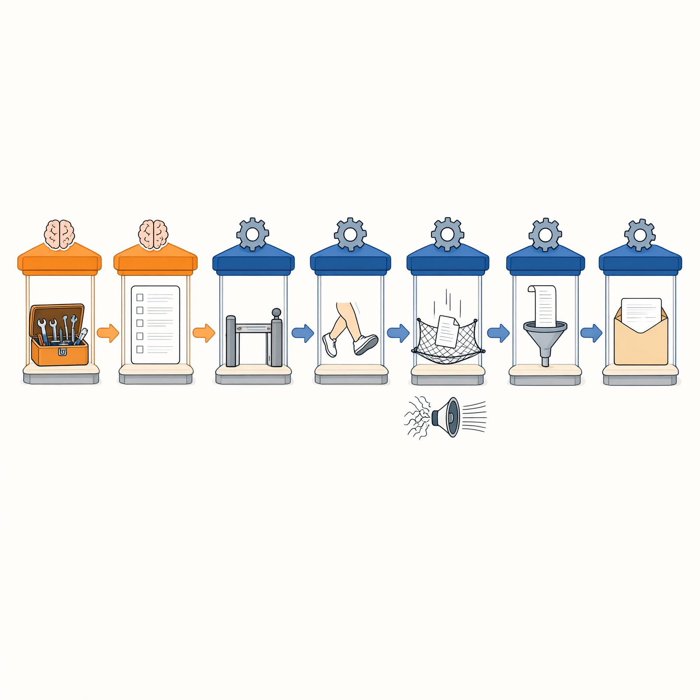
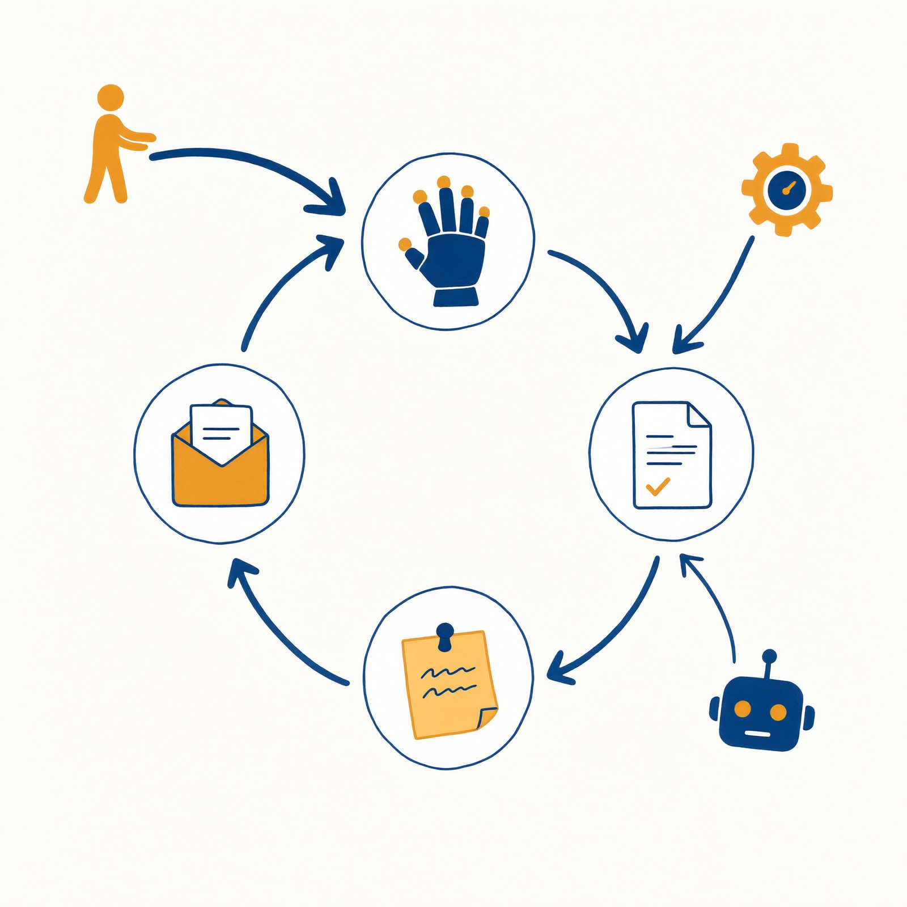
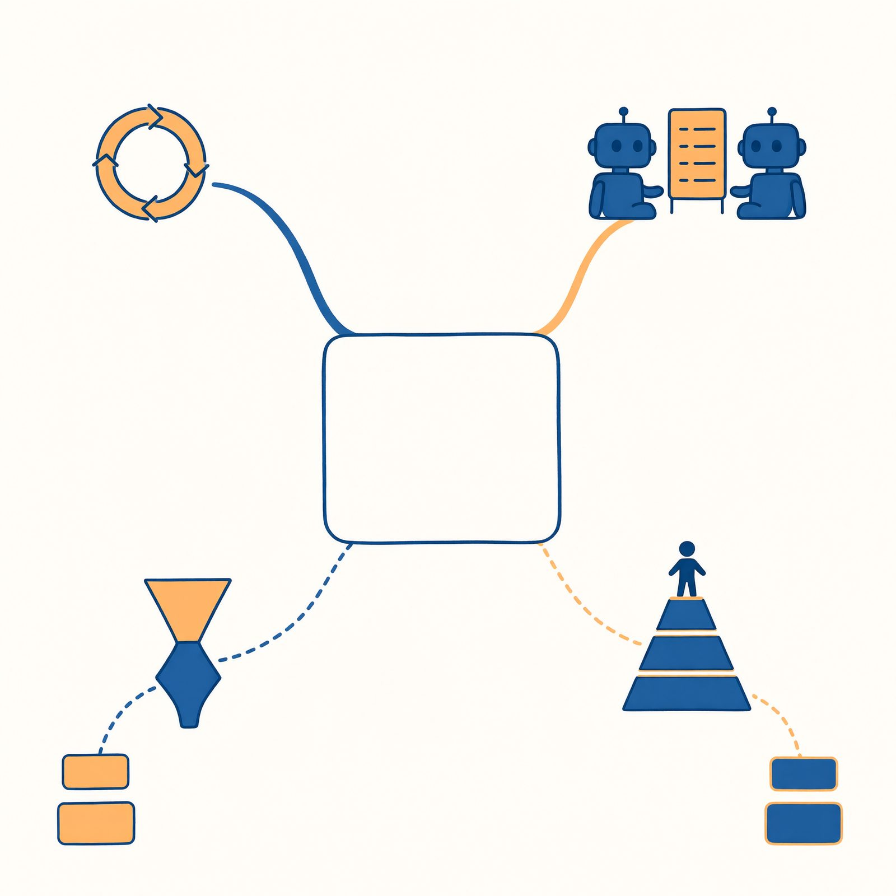
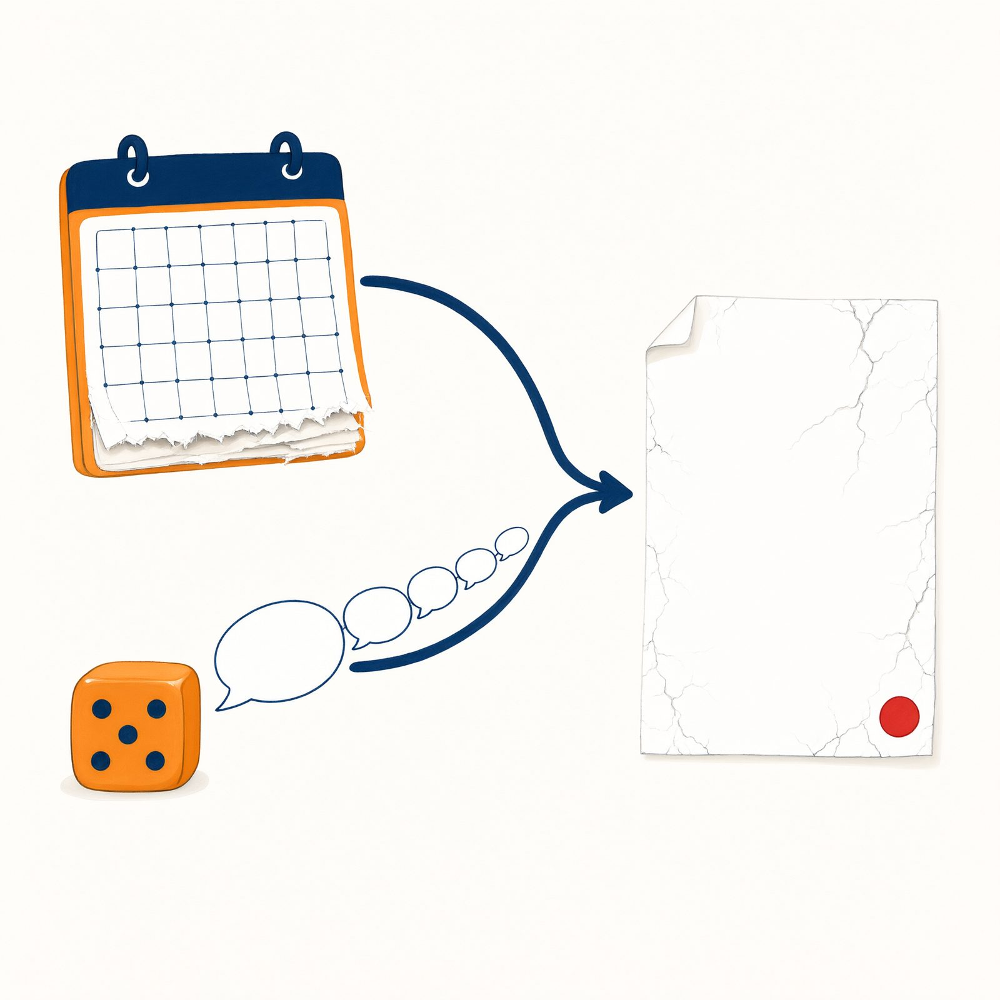
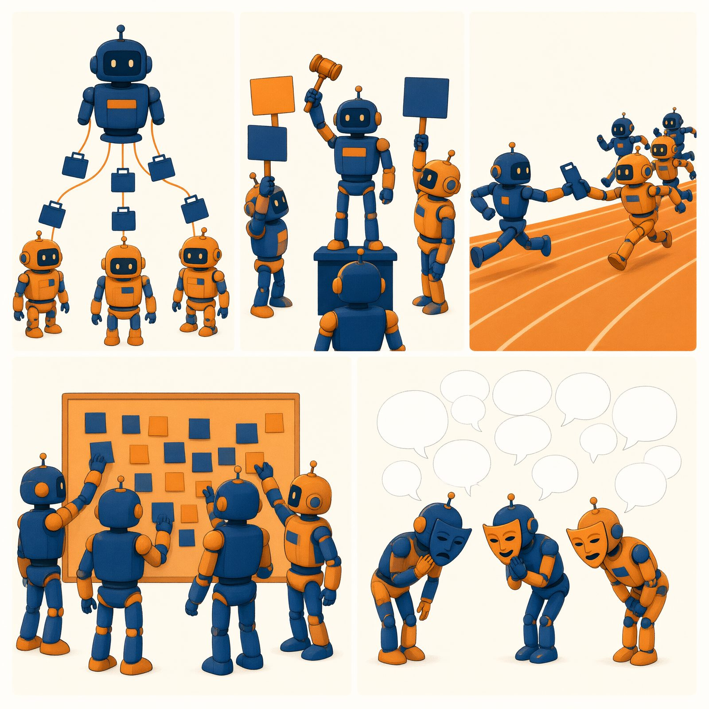
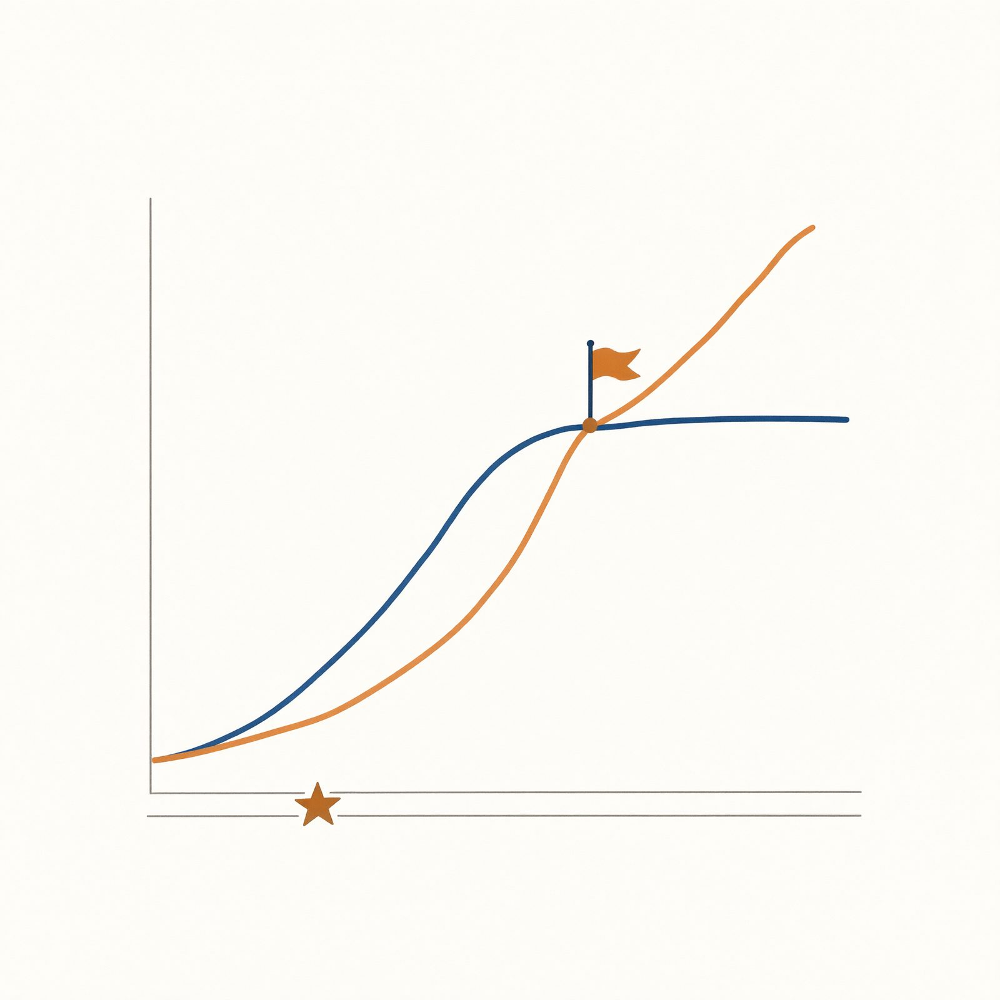

第二篇使用指南
你已经亲手组装过系统了。第二篇不布置新任务，只回答“为什么”——它是一本手册，不是教科书的第二卷。
为什么写成手册：你带着具体问题来（“为什么手册塞多了会变笨？”），就该在三分钟内翻到答案，而不是从第一页读起。所以本篇一共七章，每章自足：不假设你读过其他理论章，不要求按顺序，篇幅刻意克制。
两级导流怎么用：
- 原理速览（第一篇各章内联小框）：一段话就地解答，零跳转——多数疑问到此为止；
- 深化路标（第一篇各章末）：想深挖时的精确门牌号，直达本篇章节；
- 现象索引（本篇每章开头）：反向入口——“本章能解释你动手时的哪些现象”，带小节号；
- 检索总表（附录 B）：全书兜底，按现象查条目，44 条。
三条阅读路径：①按需查阅（默认）——撞到墙再来翻；②系统通读——想建立完整框架，按 7→13 顺序读，约四个晚上；③课程使用——教师按附录 E 指定章节与讨论题。
本篇七章的楼层关系（先看一眼地图再进楼）：第 7 章验明大脑正身（全书理论的起点）；第 8 章解剖循环与简报包（主干层，其余各章都盖在它上面）；第 9 章讲行动与流程（工具、规划、轨道、光谱）；第 10 章讲改进与评估（反思、批评、打分）；第 11 章讲记忆（四种记事本）；第 12 章讲知识与检索（开卷考试与核验）；第 13 章讲协作（五种拓扑与协作经济学）。如果只读三章：7、8、12——起点、主干、与你关系最深的一章。
最后提醒一件反直觉的事：读完第一篇不读第二篇，不算半途而废——那正是本书设计的默认路径之一。但如果你在第一篇的某个瞬间产生过“为什么”，请别让那个瞬间溜走：它是你从“会组装”走向“会设计”的全部资本。
第 7 章 新物种全貌：从“会聊天”到“会干活”
现象索引（本章能解释的动手现象）：
- 实验 1 里我建的“自定义助理”，学名到底是什么？→ §7.1、§7.5
- 为什么同一个问题问两次，AI 说法不一样？→ §7.2
- 为什么它资料室里没有的东西也敢答？→ §7.2
- 我以前用的聊天 AI，和做实验的工作台差在哪？→ §7.5
- 扫地机器人、导航软件算 Agent 吗？→ §7.3
- 为什么“AI Agent”这两年突然到处都是？→ §7.4
- 同一个模型，为什么 A 产品里聪明、B 产品里笨？→ §7.1、§7.5
学习目标：能说出聊天机器人与 Agent 的四个差别并给任一产品定位；能复述大脑的两个本性、三个后果及“毛病—制度—构件”映射；能画出能动性谱系与使用方式三段演进；能说出理解工作原理的三个理由。
7.1 万事通与办事员
第 1 章你靠直觉分过类，现在给正式定义。
聊天机器人是一个万事通顾问：知识渊博，有问必答，但只动嘴——它的全部输出是文字，文字之外什么都不发生。Agent（智能体）是一个办事员：接到任务后，它能使用工具（检索、读写文件、发邮件）、多步执行（把一件事拆成若干步做完）、接收反馈（每一步的结果回到眼前）、自主决定下一步（根据反馈调整做法，而不是等下一句指令）。
四个差别不是“全有才合格”的清单，更像四道闸门，产品们分布在闸门之间的各个位置。用四个你认识的产品过一遍：
表 7-1 四道闸门产品判断表
| 产品 |
会用工具 |
多步执行 |
接收反馈 |
自主决定 |
定位 |
| 翻译软件 |
✓（只有一件：翻译） |
✗ |
✗ |
✗ |
单功能工具，谈不上 Agent |
| 订单客服机器人 |
✓（查订单） |
半（查询→答复两步） |
✓ |
✗（路径写死） |
窄域 Agent：在固定轨道里办事 |
| 你的自定义助理 |
✓ |
✓ |
✓ |
半（有规矩约束） |
通用 Agent 的入门形态 |
| 深度研究产品 |
✓（检索全家桶） |
✓（数十轮） |
✓ |
✓ |
专用深水区 Agent |
这张表还回答了一个常见困惑——“同一个模型，为什么 A 产品里聪明、B 产品里笨？”因为四道闸门是产品装的，不是模型带的：模型相同，工具、循环、反馈机制不同，表现天差地别。第 8 章会把这句话展开成公式（表现＝大脑能力 × 简报包质量），这里先记住结论：评估 AI 产品，别只听它说用了什么模型，看四道闸门装了几道、装得多好。
还要补一句实情：真实产品大多落在两极之间的过渡带——带联网搜索的聊天 AI（装了半道工具闸：能查，但查完仍是一问一答）、能调用插件却不做多步规划的助手（工具全开、循环半开）。四道闸门的用处因此不是“分类”（非此即彼），而是定位：逐道问“装了没有、装到什么程度”，任何产品都能被你在光谱上钉住位置。判断的关键一问留给第四道闸门——结果会不会回流影响它的下一步：会，是真循环；不会，工具再花哨也还是“带装备的聊天”。
补一句为聊天正名的话：聊天不是敌人。整理思路的自言自语、论证前的预演、纯粹的发散暖场——这些“只会聊”的时刻有真实价值（光谱右端的价值，§9.7）。四道闸门不是鄙视链，是任务匹配表：给头脑风暴上轨道会杀死灵感，给转账上头脑风暴会杀死钱。本书教你的从来不是“看不起聊天”，而是一眼看出当前这个任务该过哪几道闸——看出之后，聊就安心聊，办就认真办。
四个差别里，最容易被忽视的是第四个。前三样是能力，第四样是授权：系统把“接下来干什么”的决定权部分交给了模型。正是这份授权，让 Agent 成为生产力，也让它成为风险源——授权可以收回（权限闸）、可以限制（轨道）、可以追责（留痕），但不能假装不存在。第 14 章的全部内容，可以理解为“如何管理这份授权”。
顺便给授权本身也画一条光谱——它从来不是“全有或全无”：只读级（能看材料、能回答，不能碰任何东西）→ 可执行但需批准级（能填单跑腿，危险动作过人闸）→ 全自主级（在限定范围内自行决定动作序列，事后留痕备查）。你给助理接的每个工具、设的每个求助点，都是在这条光谱上刻度（§9.7 自由度光谱的权限版，§14.3 的制度版）。产品评测里“自主性”三个字含糊其辞时，用这条光谱去问它：自主到哪一级？谁批的？
7.2 大脑的本性：无状态的概率函数
所有 Agent 里坐着同一颗大脑——大语言模型（LLM）。它的本性两条，第 1 章给过直觉版（三个事实），这里是严格版。
本性一：无状态（stateless）。模型每次被调用，都是独立的一次：只能看到这一次递给它的材料（上下文），调用结束，一切归零。它没有“记忆”这个器官——你观察到的一切“它记得我”，都是系统在外部补的：把历史对话再递一遍（工作记录）、把要点存进档案（第 11 章）、把资料挂进书架（第 3 章）。记忆是制度，不是本能。
本性二：概率性（probabilistic）。模型生成文字的方式，是按“接下来最可能是什么”逐步续写——它训练时见过的海量文本塑造了这个“最可能”。它不是在任何数据库里“查答案”，所以它的内部没有“查到”与“查不到”的分别，只有“接得像”与“接得不像”。流畅是它的母语，真实不是。
两个本性，推出三个后果，各自对应一个后续章节：
表 7-2 三后果对照表
| 后果 |
表现 |
你亲手撞过的现场 |
详见 |
| 会忘 |
长对话丢前文、换个窗口不认识你 |
实验 2“改手册必新会话” |
第 11 章 |
| 会胡说 |
语气笃定地编造（幻觉） |
假校规、编造文献、T7 测试 |
第 12 章 |
| 每次不一样 |
同题不同答、行为不稳定 |
A/B 测试的波动、“时好时坏” |
第 10 章（所以需要测试与评估） |
而全书第一篇的每个构件，都可以登记在这张“毛病—制度”映射表上：
表 7-3 毛病—制度—构件映射表
| 大脑的毛病 |
补的制度 |
你搭的构件 |
章节 |
| 看不见外面 |
递材料的通道 |
资料室、工具 |
第 3 章、§9.2 |
| 见完即忘 |
外置记忆与常驻规矩 |
员工手册、知识库、技能 |
第 2、3、4 章 |
| 概率接话 |
依据、核验与重复验证 |
出处规矩、核验清单、测试 |
第 3、6 章 |
| 一次只能想一步 |
循环与流程 |
工作循环、轨道、团队 |
第 6 章、§9.5 |
| 不懂规矩 |
制度文本 |
手册、技能、交接单、刹车 |
第 2、4、5、6 章 |
一条设计启示，全书反复回响：一切 Agent 系统，本质都是给一个失忆且靠概率说话的大脑补制度。大脑不会变，制度可以设计——这就是“人的位置”在工程上的精确坐标。
把两个本性翻译成你的三个日常习惯，本章就可以合上了：因为它见完即忘——重要的事写进手册或资料室，别指望对话记忆；当下要用的关键信息，在这句话里完整重述（§8.3 位置效应）。因为它靠概率接话——凡要署名交出的内容，过核验清单；凡它“顺手补”的数字与引用，默认待验。因为它的知识冻结在过去——涉及“最新”“现行”的判断，先问它的知识截止日期，再决定信不信（时效类问题直接交给检索工具，§3.4）。三个习惯不费钱、不费时，挡掉的却是日常翻车的大头。
◆ 概念桥｜完形填空。“概率接话”最好的直觉模型是你做过的每一种语言测试：凭语感选出“最像”的下一词。模型的语感来自海量文本，规模大到足以以假乱真——但“像”与“真”是两回事。心理学研究过一个相关现象：人对“流畅的句子”天然更容易信以为真（加工流畅性效应）。幻觉之所以危险，一半在它敢说，一半在我们爱听。
◆ 比喻的边界｜“小黑屋大脑”与“完形填空”都有失真处：模型内部并非空白——训练让它形成了庞大的知识结构，只是这结构冻结在训练截止日，且不保证与真实世界一致；“接最像的词”也非逐词瞎猜——它在多步推理任务上能表现出真实的规划能力，这是简单填空解释不了的。精确机制属于模型科学，超出本书范围；但“无状态＋概率性”这两条工程事实，足够解释你动手时遇到的九成现象。至于“脑子本身”的常识——参数量、蒸馏、思维链、跑分这些别人常挂嘴边的词——本书在附录 G 备了一份 25 条的谈资手册：仍然没有公式，但足够你听得懂、聊得上、答得出。
两个本性还写着账单。无状态的租金按轮收：每一轮对话都要重递整张桌面，历史越长、每轮越贵——你的“长对话变贵”就是这条本性在收租（§8.5）。概率性的核验费按产出收：每一句要署名交出去的话，都值几分钟四问（§12.5）。所以懂两个本性不只是懂风险，也是懂成本：懂账单的人提前设停止条件与核验分级，把租金和核验费都编进预算；不懂的人事后向账单交学费，且不知道学费是哪一门课。
7.3 感知、决策、行动：能动性的谱系
把镜头拉远。哲学与社会科学用一个词描述“能对外界作出反应并采取行动的存在”：能动性（agency）。按这个标准，Agent 不新——新的是大脑，不是回路。谱系上走一遍，每站用“感知什么—依据什么决策—行动改变什么”三要素描述：
表 7-4 能动性谱系表
| 站点 |
感知 |
决策 |
行动 |
| 恒温器 |
温度 |
阈值比较（低于 18 度制热） |
开关电路 |
| 扫地机器人 |
碰撞与距离传感器 |
避障与覆盖策略 |
移动与吸扫 |
| 导航软件 |
你的位置＋路况数据 |
路径规划 |
改变你的路线（间接行动） |
| 客服机器人 |
你的话＋订单数据 |
意图识别 |
查询、退款（有权限闸） |
| 数字见习生 |
你递的材料＋工具取回的信息 |
语言推理 |
读写文件、检索、发消息（经系统执行） |
表里还该加最后一站：你亲手组装的那个。以课程秘书为例——感知：你递的任务单＋资料室调取的片段＋工具取回的结果；决策：六要素手册约束下的语言推理；行动：经你授权的工具（读文件、检索），对外发送被你扣在手里。把它放进谱系，你会得到一个舒服的坐标：它的能动性不弱于客服机器人，但闸门比多数商业产品清楚——因为每一道都是你自己设的。谱系不是排行榜，是责任地图：站得越靠右，制度越要厚。
谱系视角给你两个判断力。其一，评估任何“智能产品”，先找回路：它感知什么、依据什么决策、行动能改变什么——回路越完整、行动后果越重，需要的制度越厚（导航说错路你还会看灯，退款机器人退错款就是事故；§9.7 三问中“错误代价”的谱系版）。其二，不被营销词吓住：“智能体”“自主 AI”“AGI 前夜”说的都是这条老回路上的某个位置，真正的新事物只有一件——回路中段那颗听得懂人话的大脑。
两个判断力各配一次练习。回路还原：拿宿舍楼下的智能音箱试手——感知：声波与唤醒词；决策：内置意图清单（放歌、定闹钟、查天气，清单之外一律“我还不会”）；行动：播报与联动开关灯，后果轻到可以忽略。回路短、闸门矮、后果轻，所以它不需要任何厚制度——这份分寸感（制度厚度跟着后果重量走）就是第 14 章的起点。营销词翻译：看到“全自主智能体，一句话搞定一切”，默译成三个问题——回路长什么样（几轮循环、谁判断完成）？闸门装在哪（哪些动作要人批）？失败怎么办（有没有留痕可回放）？三问答不上来的“全自主”，按 §13.6 的剧组处理：看个热闹就好。
7.4 Agent 小史：为什么是现在
技术史四站，各解决了一件事、各留下一个未解：
自动控制（20 世纪上半叶）：确立了“感知—决策—行动”回路的工程学。经典画面是蒸汽机旁的飞球调速器：转速升高→飞球被甩开→阀门关小→转速回落——一整套回路由纯机械完成，不需要司炉工盯着。恒温器与伺服系统都是它的后代。未解：决策只认数字与阈值，听不懂一句话。
专家系统（1970–80 年代）：第一次尝试把“人类专家的知识”装进系统。最著名的是 1970 年代斯坦福的医疗诊断程序 MYCIN：医生把经验写成约六百条“如果—那么”规则（如果血培养显示某类细菌、且感染部位在脑膜，那么推荐能穿透血脑屏障的药物……），在特定血液感染场景下的诊断准确率一度可与人类专家掰手腕。但败因值得多说两句，因为它预言了今天的很多翻车：知识获取瓶颈——那六百条规则是工程师陪着专家一条一条“抠”出来的，专家真实的判断里有大量说不清的隐性经验；规则写不完（真实世界的例外比规则多）、写不对（两条规则打架时，系统没有常识来裁决）、维护不起（新病症出现、指南更新，规则库集体过期——改一条要回归测试六百条）；医院还要为“每条处方都要能解释”买单：系统说不出理由，医生就不敢用。你写手册时的挣扎（§2.4 五种慢性病），是这个瓶颈的微型重演——区别在于，今天的大脑自带常识，手册只需写“你的特殊规矩”，不必从“什么是邮件”教起，而且解释能力是它的母语。
强化学习（1990 年代起）：教会了系统在试错中优化决策——不用人写规则了，给个奖励信号，让它自己摸。标志性时刻是 2016 年：围棋程序靠数百万盘自我对弈击败人类冠军。未解：一个系统只会一件事——战胜冠军的那位，不会替你订闹钟，换个棋盘就归零；且它不听话——你没法用一句人话给它改规矩，只能改奖励函数重新训练。
大模型时代（2020 年代起）：语言模型提供了缺了半个世纪的那块拼图——一颗听得懂人话、装得下通识、会按指令推理的大脑。“给它加条规矩”第一次变成一句人话就能办的事。于是旧回路接上新大脑：2022 年底，对话式产品把这颗大脑送到亿万人手边；“边想边做”的 ReAct 模式（第 9 章）在同一时期确立；工具调用成为产品标配，2023 年起工作流、技能、多智能体逐个产品化——你在第一篇用过的每个构件，都是这段历史的沉积层。
知道沉积层有什么用？用处在于故障定位：产品出错时，先问错在哪一层——大脑层（概率本性：编造、不稳定）、回路层（循环设计：绕圈、停不下来）、制度层（简报包与权限：材料脏、闸门缺）。三层的处方完全不同：大脑层靠核验与资料兜底，回路层靠停止条件与规划，制度层靠你自己的手册与轨道。把“AI 不行”拆解成“哪一层不行”，你就从用户变成了诊断者——第 8 章的十三层与第 9 章的光谱，就是这套诊断学的两张地图。
沉积层视角还送你一种成熟度直觉：一个构件在历史上出现得越早，被时间打磨得越久——函数调用（点餐单）比多智能体（剧组）老成，工作流比自我进化老成。于是在两个方案之间选择时，“它站在哪一层沉积上”就是一个风险指标：站在老沉积层上，失败模式已知、有文档、有前人踩坑记录；站在最新沉积层上，你是早期使用者，荣誉与坑一起来。不是新层不能用——是用新层时，测试预算要加倍（§6.4 十例三刁难的逻辑，从任务层上移到构件选择层）。
为什么是现在爆发？一句话：回路早就有了，大脑刚刚长好。反过来这也给了你一个冷静的预期管理：大脑长好才三五年，围绕它的制度（安全、评估、责任）还在施工中——你此刻学“给 AI 立规矩”，不是学一门成熟手艺，是赶上一门手艺的定型期。
7.5 发展脉络三阶段：从裸机到工作台
第 1 章 §1.3 给过体验版，这里是系统版。普通人与大模型的关系，经历了三个形态——每一形态的本质，是制度由谁来补：
第一段：用裸机 LLM——制度全靠你手工补。直接面对大脑本身：聊天窗口或接口，材料手工组装（背景一段段贴）、记忆手工维护（它忘了你再贴一遍）、核验全靠自觉。没有工具（碰不到你的文件与网络）、没有循环（一问一答）、没有权限概念（它给什么你收什么）。上限是“会聊天”。这一段的技能被称为“提示词技巧”——市面上大量课程停在这里，不是因为再往前没用，而是因为再往前需要产品提供扩展点。
第二段：用 Agent 产品——厂商替你建好通用制度。四样制度打包出厂，每样都对着大脑的一个毛病：循环（多步执行，不必你逐轮指挥——治“一次只能想一步”）；工具（读写文件、检索、运行程序——治“没有手脚”）；上下文管理（自动组织简报包：该带的历史带上、该压缩的压缩、该检索的检索——治“桌面有限”）；权限（危险操作先问你——治“概率接话却可能真做事”）。代表形态三类：终端智能体（如 Qwen Code——在命令行窗口工作的办事员，黑窗口里敲的全是人话）、深度研究产品（交代题目，交回带引用的报告）、对话 AI 的自定义助理（写手册、挂知识库）。跃迁的本质：从“会聊天”到“会干活”——大脑没变，制度建起来了。这也解释 §7.1 那个困惑：A 产品与 B 产品的差距，多半在这四样制度的完成度。
第三段：在产品上开发构件——你补上专属制度。工作台开放扩展点，通用制度之上长出你的定制层：员工手册（Prompt：它是谁、守什么规矩）、资料室（知识库：依据什么回答）、操作手册（Skill：一类事怎么做）、专职助理（Sub-agent：活怎么分）、轨道（工作流：路径怎么固定）。跃迁的本质：从“用工具的人”到“定制系统的人”——本书第一篇六章，就是这一段的完整学徒期。
第四段（在建）：系统自己沉淀制度。做过三次退款流程后，自动把成功路径提炼成一份“退款操作手册”存入技能库——工程上叫自我改进/技能沉淀。前景诱人（制度自动增厚），风险明确（错误经验也会被固化：一次侥幸成功的野路子被沉淀成“标准流程”，此后被执行一百次——§11.2 详谈，成熟的形态必须配人工审核：沉淀可以自动，入库必须过人）。三阶段走完你已能自己补制度；第四段是制度开始自己长——刹车怎么装，是第 15 章留给未来的问题。
 （与图 1-4 共用底稿，排版时加“制度由谁补”标签带）
（与图 1-4 共用底稿，排版时加“制度由谁补”标签带）
三阶段的规律，也是本篇的总纲：每一段都在给裸大脑多补一层制度。
顺带排掉三个常见误解。误解一：“第三段比第一段高级，该告别聊天框了。”——不。裸机对话至今仍是头脑风暴、快速问答、试探想法的最优工具（光谱最右端的价值，§9.7）；三段是加法不是替换，成熟的使用者一天之内在三段之间来回切换。误解二：“到了第三段，构件装得越多越强。”——构件按需求爬楼（§6.6），每装一件都在加调试账与传话账；“五个构件全上”的系统如果三问过不了，不如一份好手册。误解三：“第四段来了，前三段就过时了。”——恰恰相反：系统自动沉淀的制度，仍要人按前三段的标准验收（沉淀可以自动，入库必须过人，§11.2）——第四段越成熟，前三段的手艺越值钱，因为验收自动沉淀物用的正是它们。
三段不是三个阵营，而是一天的三种模式。看周舟的周一：早上头脑风暴读书节复盘角度——裸机对话，要的就是概率的发散（第一段在右端发挥）；中午让深度研究产品查“高校读书节活动的三种常见风险”——第二段，交给厂商建好的检索循环；晚上跑“周一汇总线”——第三段，她的轨道与技能按部就班交付。同一个人，一天之内在三段之间切换三次，每次切换的依据只有一个：这个任务需要多少制度。这三段的切换感，就是本书想留给你的肌肉记忆。
7.6 为什么值得弄懂工作原理
三个理由，对任何读者成立。
用得更好。懂原理的人与不懂的人，用的是同一个产品，得到的是两个东西：懂简报包的人知道重要信息要在当下这句话里完整重述、而不是说“记住我上面说的”（§8.3 位置效应）；懂概率本性的人不会让 AI“顺手补个数字”，会给关键任务设核验点，而不是事后惊讶；懂触发条件的人写技能会写“收到什么材料时使用”，而不是“注意认真”。同样的月费，两倍的产出——这是本书能承诺的最实际的回报。
看得更透。懂“流畅是它的母语，真实不是”的人，对以假乱真的胡说天然免疫——不是靠警惕心（警惕会疲劳），是靠机制理解（知道它为什么敢）。这份素养有个即时的用武之地：如今你看到任何“AI 自主完成了××”的爆款视频，都能做一次四道闸门体检（§7.1）——有真循环吗？有真工具吗？结果回流了吗？还是剪辑出来的演示？上一代人的媒介素养是“电视里说的不一定真”，这一代是“AI 说的不一定真，且它说的时候同样流畅”——还要加半句：AI 演示的不一定真，且演示与产品之间隔着第 13 章 §13.6 那三问。
参与定规矩。AI 的治理讨论——学术披露规范怎么定、招聘筛选的 AI 要不要审、出错责任归谁——正在各个机构里同时进行，而讨论桌上最缺的，是懂系统但不写代码的人。差距具体长这样：学校征集“课程 AI 使用规范”意见时，不懂系统的人只能写“合理使用 AI”（口号，无法执行，§2.2 的形容词病）；懂系统的人能写出“检索类辅助须披露来源与核验方式，生成类辅助须披露参与环节，禁止代考代写”——每一条都对着一个可检查的环节（§14.6 四底线就是这类条款的示范）。能说出“这个环节不可逆，必须设人工闸”的人，比只会说“要监管”和“别管太多”的人都稀缺。第 14 章是你的入场券。
三个理由其实是一条路的三段：用得更好是入口（亲手搭过系统的人才知道制度值钱）、看得更透是防线（不被流畅的胡说与惊艳的演示带走）、参与定规矩是出口（把前两段长出的判断力，变成别人也能用的条款）。多数人在入口停留——本书不催你走完全程，但把三段的地图都给你：入口在第 1 章，防线在第 10、12 章，出口在第 14 章。走完的人有一个共同特征：他们谈论 AI 时很少用“聪明”或“笨”，而用“制度厚不厚”。
7.7 回看你的工作台
用本章的三把尺子，重新量一遍你第 1 章选的工作台。示范量两个：
表 7-5 工作台三把尺子示范
| 尺子 |
量 Qwen Code 类终端智能体 |
量对话 AI 自定义助理 |
| 四道闸门（§7.1） |
四道全装：工具齐全、多轮循环、结果回流、自主决定（有权限闸） |
装了前两道半：部分产品可联网检索，循环与自主性视产品而定 |
| 三段脉络（§7.5） |
第三段：手册文件、技能、Sub-agent 扩展点齐全 |
第二至三段之间：手册与知识库是标配，技能与团队看产品 |
| 回路三要素（§7.3） |
感知＝你递的材料＋文件夹＋工具取回；决策＝语言推理；行动＝读写文件、运行、检索（经系统执行，有沙箱意识） |
感知＝对话＋知识库；决策＝语言推理；行动＝多为生成文本，部分产品可联网 |
量完之后你会发现一件有意思的事：没有“最好的工作台”，只有“闸门与脉络位置匹配你任务的工作台”——写课程论文，自定义助理（第二三段、闸门够用）绰绰有余；批量整理文件夹，终端智能体（四闸门全开）不可替代。选型是匹配问题，不是排名问题（表 1-2 五标准的深层含义）。
鉴定书怎么写？给一段示范（百字左右，供仿写）：“我的工作台是某对话 AI 自定义助理：四闸门装了前三道半（有工具、有循环、结果回流，自主决定受限）；三段脉络处第二段末（手册与知识库齐备，无原生技能与 Sub-agent，用替代法补齐）；回路三要素：感知＝对话＋知识库＋联网检索，决策＝手册约束下的推理，行动＝文本生成为主、发送权在我。结论：研究类任务胜任，批量文件任务改用 A 线。”——注意三个特征：每条判断都有证据（哪个功能对应哪道闸）、承认边界（不能干什么）、给出分工（什么任务换什么台）。会写这样的鉴定书，“回看工作台”就从仪式变成了能力。
最后反方向量一次：用三把尺子量你自己的系统。闸门：四道装了几道？（你的发送权扣在自己手里＝第四道装了半道——而你装的这半道，比多数产品的默认更可靠，因为它经过你的事故。）脉络：第几段？（你的周一汇总线在第三段。）回路：感知＝材料＋检索，决策＝手册约束下的推理，行动＝读写与检索、发送权在人。量完你会发现一个事实：你的系统闸门比许多商业产品清楚——不是因为你比它们的工程师聪明，而是因为你的每一道闸都对着一次具体的事故装上去的，而它们的闸要对付一千万人的事故。个人系统的价值正在于此：每条规矩背后都有一个案子，每个案子都是你的。
本章小结：Agent＝旧回路（感知—决策—行动）接新大脑（听得懂人话的语言模型）；四道闸门看产品，第四道（授权）连着第 14 章；大脑两本性（无状态、概率性）推出三后果（会忘、会胡说、不稳定），“毛病—制度—构件”映射表登记了第一篇的全部劳动；能动性谱系与技术小史给出定位感——回路早就有了，大脑刚刚长好，制度正在施工；使用方式三段演进（裸机→产品→构件开发）＋在建的第四段（自我沉淀），每一段都是制度加厚一层。一句话：模型决定能力上限，制度决定实际表现——而你，是制度的作者。
标注说明：中心词与分支标签按本章小结填写，排版时添加（底稿无字）。
思考题
- （复述）说出大脑的两个本性、三个后果，并默写“毛病—制度”映射表的至少三行。
- （辨析）用“四道闸门”给以下产品定位并说明关键差别：①会自动续写代码的编辑器插件；②能查订单并办理退款的客服机器人；③你说一句它就画一张图的绘画工具。哪个的“授权”最重？为什么？
- （开放）§7.5 的第四段“系统自己沉淀制度”正在产品化。结合第 4 章思考题 3（错误会被忠实执行一百次）与 §11.2 预告（沉淀可以自动，入库必须过人），为“自动沉淀技能”设计三条入库审核规则，并说明每条防的是什么事故。
回到动手：给你第 1 章的工作台写一份 150 字鉴定书：三段脉络中的位置＋构件阶梯级别（§6.6 判据表）＋四道闸门逐道判断＋回路三要素描述。写完对照 §7.7 的示范表检查：你的每一句判断，有没有落到可观察的证据上？
延伸阅读
- 马克斯·泰格马克《生命 3.0》：把“能动性谱系”放到生命与智能的大历史里看——§7.3 的放大版，也是“制度施工期”最好的一份远景图。
- 艾伦·图灵《计算机器与智能》（短文，中译本易得）：“会聊天”与“会思考”的世纪之辩从哪里开始；读完 §7.2 再读它，你会对“模仿游戏”有全新的体会。
- 回读本书第 1 章：本章是它的系统版；两章对照读，能看清“入门”与“深入”各自省略了什么——省略的部分，正是你这两个月动手补上的。
附：本章图表清单（供编辑与插画师）
| 编号 |
名称 |
位置 |
形式 |
| 图 7-1 |
两本性-三后果推导图 |
§7.2 |
推导图（两条本性→三个后果→三个章节） |
| 图 7-2 |
三段发展脉络图（精细版） |
§7.5 |
四级台阶图（与图 1-4、图 6-2 呼应） |
| 图 7-3 |
本章地图 |
小结 |
思维导图 |
| 表 7-1 |
四道闸门产品判断表 |
§7.1 |
四产品×四闸门 |
| 表 7-2 |
三后果对照表 |
§7.2 |
四行表（后果/表现/现场/章节） |
| 表 7-3 |
毛病—制度—构件映射表 |
§7.2 |
五行表（全书构件总登记） |
| 表 7-4 |
能动性谱系表 |
§7.3 |
五站点×三要素 |
| 表 7-5 |
工作台三把尺子示范 |
§7.7 |
两产品×三尺子 |
第 8 章 数字见习生的内心：循环与任务简报包
现象索引（本章能解释的动手现象）：
- 员工手册为什么有长度上限？塞多了为什么变笨？→ §8.4、§8.5
- 为什么长对话到后面，AI“忘了前面说过的”？→ §8.2、§8.5
- 为什么手册和对话指令打架时，它听谁的不一定？→ §8.3
- 为什么“材料给太多反而更笨”？→ §8.4
- 为什么它有时停不下来、反复做同一件事？→ §8.2
- 实验 2 里“改手册必新会话”是什么道理？→ §8.3
- 为什么同一个助理，在不同产品里表现不一样？→ §8.2、§8.3
- 为什么第 3 章说资料室“按需调取”比“全部塞入”聪明？→ §8.3、§8.5
学习目标：能画出工作循环六环节并标注“制度环节”与“大脑环节”；能按三组说出简报包的主要层；能用桌面学五条标准诊断一次“AI 变笨”；能解释 token、窗口与三种应对策略的取舍。
第 7 章验明了大脑的正身：一个失忆的、靠概率说话的天才。本章看它的日常生活——每一轮工作，它经历什么、看见什么。两项制度：循环（它的工作节奏）与简报包（它的全部世界）。这一章是第二篇的主干：往后每一章（记忆、检索、协作、安全）都是在本章的地基上加盖楼层。
8.1 关在小黑屋里的天才大脑
先把 §7.2 的两个本性翻译成三个工程问题。
大脑只能看到递进去的材料（本性一的推论）——于是第一个问题：材料从哪来？它自己没有眼睛耳朵，不会主动去查任何事；每一轮它知道的世界，就是那一轮递给它的文字，一个字不多。
大脑见完即忘（无状态）——于是第二个问题：多久递一次、每次重递什么？它不会“接着上次”，除非系统把上次的记录再递一遍。你观察到的“连续对话”，是系统每轮重放历史的错觉——准确说，是精心剪辑过的重放（剪辑的艺术见 §8.5）。
大脑靠概率接话（本性二）——于是第三个问题：递多满？材料是它唯一的行动依据，但不是越多越好：每个字都在参与“接下来最可能是什么”的计算，废话与要紧的话在概率面前一律平等（不平等的只有位置与分量，§8.4 细说）。
三个问题的答案合起来，就是 Agent 系统的两项核心制度：循环（规定多久递一次、流程怎么走）与简报包（规定每次递什么、怎么装）。看清这一点，“Agent 工程”这个唬人的词就落地了——它不是研究大脑的学问（那是模型科学），是给大脑安排工作的行政学。
◆ 比喻的边界｜“小黑屋”比喻有一处重要失真：屋内并非空无一物——大脑带着训练时学到的海量知识（语言、常识、专业内容），这些是它的“固有记忆”，不需要递。所以准确的说法是：小黑屋里有一位带着全部旧学问、但看不见任何新东西的天才——新信息全靠递纸条，旧知识冻结在入学那天（知识截止，§12.1）。这个修正不影响任何工程结论，但影响你对它的期待管理：它不是白纸，是一本出版于去年、不能增印的书。
8.2 见习生的工作循环
六个环节，逐一过堂
第 1 章图 1-2 的严格版。一个 Agent 系统的主循环：
① 领任务。接收目标：你的一句话、一份文件，或上一个系统的交接单（§13.4）。任务的清晰程度决定后面一切——“帮我弄一下读书节”和“按蓝图 M1–M4 推进读书节策划，每个里程碑交产出物”是两个世界（§6.3 需求三问的第一现场）。
② 组装简报包。系统把该进包的材料按规则装包：员工手册、政策条款、任务单、工具清单、工作记录、检索到的资料、上一轮结果……这是整个循环里唯一由“制度”而非“大脑”完成的智力工作——装什么、装多少、怎么排序、旧记录怎么剪，全是系统的设计决策。Agent 工程的主战场就在这一步，§8.3 整节拆它。
③ 调用大脑。材料包递进小黑屋，大脑给出二选一的产出：一个动作请求（“调用某工具，参数如下”——§9.2 的点餐单），或一段最终答复。仅此而已——大脑不执行任何动作，它连“把文件存下来”都做不到，只能请求。
④ 执行动作。系统跑腿：查资料、读文件、发消息。危险动作在这里过权限闸（§14.3）——注意闸口的位置：在“收单”与“跑腿”之间，大脑的填单权到此为止。执行可能成功也可能失败，两种结果都要如实带走。
⑤ 记录结果。动作的产出（或失败信息）经摘要与格式化后，追加进工作记录——下一轮简报包的原料。这一步的质量常被低估：原始报错全文入包与“检索超时，可重试”一句话入包，下一轮的大脑面对的是两个世界（§9.3 第五步）。
⑥ 判断去留。任务完成？→ 下班，交付结果。未完成且未超限？→ 回到 ②，下一轮。超限？→ 强制下班并报告。停止条件（最大步数、最长时限、预算上限、求助点）就装在这个环节——循环的“下班制度”。没有它，③④⑤ 会无限自我复制：这就是“AI 停不下来反复重试”的全部机制（§9.1 病例一），也是第 6 章三刹车的原理位置。
一次完整的循环走查
看周舟的课程秘书跑“整理本周作业”（A 线场景），六环节各发生了什么：
表 8-1 循环走查表（课程秘书案例）
| 环节 |
这一刻系统里的事 |
| ① 领任务 |
周舟输入：“整理我这周要交的作业，做成表格。” |
| ② 组装 |
系统装包：员工手册（QWEN.md 全文）＋任务单（这句话）＋工具清单（文件读取、搜索）＋资料室索引（工作文件夹里有什么）＋工作记录（本会话此前的两轮） |
| ③ 调用 |
大脑读完包，判断：作业信息应在“教学大纲”和“作业通知”两份文件里 → 填单：读取这两个文件 |
| ④ 执行 |
系统读文件，取回内容（其中一份是扫描版——读回来的是空文本） |
| ⑤ 记录 |
结果摘要入记录：“大纲已读取；作业通知读取为空（疑为图片型文件）” |
| ⑥ 判断 |
任务未完成（缺一半材料）→ 下一轮 |
| ②′③′ |
第二轮：大脑看到“读取为空”，按手册规矩处理：列出已从大纲提取的四条作业，明说“作业通知读不出来，该文件可能是扫描版，请提供文字版”，交付半成品＋缺口报告 |
| ⑥′ |
判断：能做的已做完，缺口如实报告 → 下班 |
两轮循环，一次合格的交付。注意三处制度的作用：手册里“查不到就明说”的规矩让缺口报告成为可能（没有它，第二轮的大脑可能按概率把“作业通知”的内容编出来——§12.1 的案发现场）；第⑤步的摘要让第二轮的大脑一眼看到问题（若入包的是原始报错，它未必读得懂）；第⑥步的“缺口如实报告也算完成”避免了无限重试。
循环揭示的两件事
第一，大脑只做一件事。六环节里，大脑只出现在 ③——看着材料包，决定“下一个动作或最终答复”。领任务、组装、执行、记录、判断去留，全是系统（制度）的活。所以“同一个大脑，不同的表现”毫不神秘：表现差异来自 ②⑤⑥ 的制度差异。同一个模型，A 产品里聪明、B 产品里笨，多半不是模型换了，是循环的组装规则、摘要质量、停止条件不同（§7.7“回看你的工作台”的机制版）。
第二，Agent 的表现＝大脑能力 × 简报包质量。乘法不是加法：包质量为 0（材料缺失、自相矛盾、噪声淹没），大脑能力再强也是 0；包质量高，普通大脑也能稳定交付。第一篇全部六个构件，本质上都是给这个乘法式的右项加分：手册与技能管“规矩清晰”，资料室管“依据充分”，Sub-agent 与工作流管“每轮的包更干净”（分工之后，每个大脑面对的材料更少更专）。
循环也有账单，公式简单：单轮成本 ≈ 桌面大小；总成本 ≈ 桌面大小 × 轮数。而桌面随轮数增长（工作记录在累积），所以长任务的成本超线性上涨——第二十轮的单轮成本可能是第二轮的五倍。这解释了两个工程习惯的存在理由：结果摘要化（压桌面增速，§9.3 第六步）与停止条件（砍轮数增速，§8.2 ⑥）。由此得到一句实用的设计观：循环设计就是成本设计——每一轮“让它再想想”，都是你签字的一笔开销。看懂账单公式的人，知道账单超标时该砍哪里：砍桌面（摘要）、砍轮数（停止）、或砍任务（拆分，第 5 章）。
◆ 概念桥｜文书行政。这个循环你其实见过：办事窗口收到申请（领任务），调出档案与规章（组装材料），经办人批示下一步（调用大脑），外勤核实（执行），结果记入卷宗（记录），卷宗齐了结案、不齐继续补（判断去留）。现代科层制几百年打磨出的“以文书驱动办事”，与 Agent 循环同构——文件不齐不批示、批示必须落卷宗、结案必须可回放。难怪给 AI 建制度用的全是行政词汇：手册、工单、审批、留痕。你在任何办事大厅观察半小时，就等于旁听了一节 Agent 工程课。
循环的几种变体（认得出即可，不必会搭）
六环节是“标准舞步”，产品实现各有变奏，常见的四种：深度限制——⑥ 的停止条件写成“最多 N 轮”，N 常设在 5–30 之间，产品里叫“最大步数/迭代次数”；并行执行——③ 一次填多张互不依赖的点餐单（同时查天气和查日历），④ 并行跑腿，省轮次；反思加轮——⑤ 与 ⑥ 之间插一步“自评”（对照标准检查本轮产出，不合格打回重做），第 10 章的反思机制在循环里的安装位置就在这；规划前置——① 与 ② 之间先跑一轮“出计划”（§9.4 的 M1–M4 就是这一轮的产物），此后每轮的简报包里都钉着这份计划。识别变体的用处：看任何产品的“高级设置”，你现在知道那些开关在改循环的哪一段——最大步数改 ⑥，并行改 ④，计划模式改 ①②。
8.3 任务简报包解剖
十三层材料，三组身份
循环第 ② 步装进包里的材料，完整版有十三层。不必背——按“谁写的、什么时候进包”分三组：
常驻层（每轮都在，系统级配置）
表 8-2 十三层三组总表
| 层 |
是什么 |
谁写的 |
| 员工手册 |
系统提示词：身份、规矩、格式 |
你（第 2 章） |
| 政策条款 |
部署方的安全与合规条款 |
产品方（你看不见，但始终在场） |
| 工具清单 |
装备说明书：每件工具的名称、用途、参数 |
产品方＋你（§9.3） |
| 任务单 |
本轮目标 |
你，或上游环节 |
累积层（越滚越厚，循环的副产品）
| 层 |
是什么 |
谁写的 |
| 工作记录 |
历史对话与动作 |
系统自动追加 |
| 跑腿结果 |
工具返回的观察 |
系统摘要后追加（⑤） |
| 草稿纸 |
模型的中间思路、计划、待办 |
大脑自己（规划类模式会显式用它，§9.4） |
| 纠错单 |
失败信息与异常 |
系统翻译后追加（§9.3 第五步） |
按需层（用到才进包，检索的产物）
| 层 |
是什么 |
谁写的 |
| 参考资料 |
从资料室检索来的片段 |
检索系统按当前问题调取（第 3、12 章） |
| 记事本 |
从长期记忆调取的偏好与事实 |
记忆系统（第 11 章） |
| 包装规范 |
格式要求、安全边界、空间预算 |
系统（预算规则见 §8.5） |
十三层一览：每层一句实例
抽象的层名容易记不住，各配一句“你见过它”的实例：
| 层 |
实例（来自你的实验） |
| 员工手册 |
“你是课程秘书……材料里没有的，明说找不到”（第 2 章你写的那份） |
| 政策条款 |
“拒绝生成违法违规内容”（产品方写的，你没见过原文） |
| 任务单 |
“把我这周要交的作业整理成表格”（实验 1 的 T1） |
| 工具清单 |
“搜索：查公开网络信息，适合事实性问题……”（§9.3 五要素） |
| 工作记录 |
近三轮对话原文＋更早轮次的摘要（§11.3 的产物） |
| 跑腿结果 |
“天气工具返回：晴，阵风 7 级（来源：××）” |
| 草稿纸 |
“计划：M1 已确认；M2 进行中；缺口：横幅单价”（§9.4） |
| 纠错单 |
“检索超时，未获结果，可重试或更换关键词”（§9.3 第五步的翻译成果） |
| 参考资料 |
资料室调出的三段片段，各带文件名（第 3 章） |
| 记事本 |
档案卡三条：“偏好表格交付／预算上限 500／周三晚有课”（§11.2） |
| 格式要求 |
“五列表格交付：事项／来源／期限／分类／状态”（§6.1） |
| 安全边界 |
“对外发送必经确认；删除类操作禁止”（§6.2 三刹车） |
| 空间预算 |
“本轮总包 ≤3 万 token，其中参考资料 ≤5 千”（系统在后台执行，你看不到但它在场） |
读这张表像读一份行政文书流转单——每层都有作者，每层都有读者。看清每层的作者之后，两个新手常犯的装配错误也就不犯自明：错误一，以为十三层全是产品的事——数一数，至少五层的作者是你（手册、任务单、资料、技能、格式要求）；系统的表现里，你的笔迹比想象中多。错误二，只管内容不管预算——每层“写什么”之外还有“占多大”：参考资料调十段还是三段、工作记录留几轮原文，都是设计决策；内容决定它答什么，预算决定它记得住什么（§8.5 桌面学的第一定律在此二次生效）。
三条工程结论
结论一：手册只是十三分之一。你精雕的员工手册，每一轮都与工具清单、工作记录、检索片段同桌竞争注意力。这解释了一个高频困惑：“手册明明写了，它怎么不听？”——未必是不听，可能是没看见：手册被四十轮对话记录挤到桌面边缘，或被一段万字检索结果盖住了。诊断“手册失灵”，先查桌面拥挤度（§8.4），再改手册文字——顺序反了会白改三遍。这也是第 2 章“手册不过三百字”的深层理由：常驻层的每一行，每轮都要付一遍桌面租金。
结论二：手册不天然压过对话。常驻层听着权威，但大脑看到的只是“一包里位置靠前的文字”——它与当下这句话之间没有制度性的优先级（不像公司里章程压过口头指示）。两者冲突时，行为取决于措辞强度、位置、甚至运气（§2.4“比喻的边界”的机制版）。两条推论：别指望手册对抗成心的诱导（那是护栏与权限的活，§14.2）；手册与临时指令打架了，以改手册收场——制度要跟上现实，而不是指望现实服从旧制度。
结论三：按需层是省钱省心的关键。资料与记忆不常驻桌面、用时才调——第 3 章资料室与第 4 章技能“省桌面”的原理全在“按需”二字：平时桌面上只有一行目录（资料室的文件名清单、技能的触发条件），正文命中才上桌。为什么第 3 章坚持“命名规范”？因为按需层的质量＝目录的质量：目录含糊，调取就失灵（§12.3 因素二）。
十三层之外补一层见闻：有些产品会在常驻层塞进一份模型自我介绍（“我是谁、我的局限、我的知识截止日”），工程上叫模型卡注入。它的存在解释了一个现象：有时你什么都没写，助理也会主动说“作为 AI 我可能犯错”——那不是它在忏悔，是常驻层在说话。这一层与你的手册可能打架：它说“我可能犯错”（免责声明），你的手册说“不确定就明说并标注待核实”（动作条款）——前者是姿态，后者是制度。处置按 §8.3 结论二的手册裁决规则：把免责声明改写成你的动作版写进手册（“承认局限的方式是：标注待核实＋给出核验建议”），让姿态落地为工序。
◆ 原理速览｜为什么“政策条款”这层你永远看不见，却必须知道它存在？因为它是产品方写在你手册之前的规矩（安全红线、拒答范围），你的手册与它冲突时，通常它赢——这就是为什么有时你的助理“莫名”拒绝某些任务：不是你的手册写错了，是楼上还有一层制度。评估工作台时“数据与合规可靠吗”（表 1-2 第⑤条），问的就是这层看不见的文字是谁写的、为谁写的。
装包的顺序与位置：桌面不是平面
十三层不是随意堆放的——装包顺序是设计决策，因为 §8.4 会讲到的“位置不公平”在这里就开始起作用。通行的装包惯例：手册与政策在最前（开场定调，讲台效应的前排），任务单与最新指令在最后（大脑“落笔前最后看到的”是当下任务——近因效应），中间按“工具清单→历史记录→检索资料”排布，且历史记录常做“三明治”处理：久远历史给摘要、近期历史给原文。两条可操作的推论：其一，重要的常驻规矩写在手册的开头或结尾，别写在中段——手册内部也有讲台与后排；其二，长对话中途想强调一件事，与其说“记住我上面说的”（它在几十轮之外），不如在当下这句话里完整重述——利用“最后位置”，别指望大脑翻旧账。你会发现产品们的行为都符合这些惯例：同样的手册，放在设置里比贴在长对话中段生效稳定得多——不是玄学，是位置。
8.4 桌面学：上下文不是越多越好
为什么“多给材料”是直觉错误
直觉：材料越全，AI 越不会错。实践恰恰相反，且 §8.1 已经给出理由——大脑对桌面材料没有选择性忽视的器官：递进去的每个字都参与概率计算，包括废话、旧账和互相打架的两份说法。材料翻倍不是“信息翻倍”，是竞争者翻倍：要紧的那三条规矩，要和十万字的背景材料抢注意力。
还有一个隐蔽机制：位置不公平。桌面不是平面，是讲台——开头与结尾的材料听得最清楚，中段最容易被“听漏”（工程上叫中部迷失）。把关键规矩埋在长材料中段，等于在嘈杂的火车站广播里念登机口变更。
脏上下文五种病，各配一个病例
- 无关历史：三轮前闲聊的旅行计划还在桌上，本轮写公文时，语气莫名轻佻了。
- 超长结果：一次搜索返回万字原文全量入包，此后每轮大脑都在垃圾堆里找你的任务单。
- 噪声资料：资料室贪多（第 3 章选料的账），检索调上来九段不相干的，一段相干的被稀释。
- 重复报错：同一个失败信息滚了五轮，桌面变成循环播放的事故现场，大脑开始对着报错“反思”而非解决问题。
- 互相冲突：新旧两版策划案同时在桌，它随机采信一份——你看到的是“时灵时不灵”，实际是“掷骰子”。
五种病的共同点：都不是大脑的病，是桌面的病。处方也共通：截断（旧历史折叠为摘要）、摘要（长结果压缩入包，原文存档备查）、过滤（检索设相关度门槛）、去重（同一报错只入包一次，附“已重试 N 次”计数）、清场（冲突材料只留权威版——第 3 章“除草补新”在此生效）。
好上下文五条标准（诊断清单）
诊断任何一次“AI 变笨”，按五条扫桌面，每条给一个检查动作：
表 8-4 五条标准诊断清单
| 标准 |
检查动作 |
| 目标清楚 |
让它在当前状态下复述任务——复述走样，先修任务单 |
| 状态明确 |
问“你已完成了哪几步、还缺什么”——答不上来，工作记录该整理了 |
| 工具可用 |
看装备清单：该在的工具在吗？说明书五要素齐吗（§9.3）？ |
| 证据可靠 |
抽查桌面上的参考资料：来源对吗？过期了吗？互相打架吗？ |
| 噪声最低 |
数一数：桌面上与当前任务无关的材料占几成？超过三成，清场 |
先扫桌面，再疑大脑——这个诊断顺序值得形成肌肉记忆。工程界的经验与你的实验记录一致：多数“模型不行”的案例，尸检结果是桌面问题。
两个完整诊断案例
案例一：“它突然不守格式了。”症状：课程秘书前二十轮都按表格交付作业清单，第二十一轮起变成大段散文。新手诊断：模型偷懒，重写手册格式条款（无效，且违反“一次只改一处”）。桌面诊断：五条标准逐项扫——目标清楚（是）；状态明确（是）；工具可用（是）；证据可靠（是）；噪声最低（否）：第二十轮你贴入了一份八千字的活动通知全文，桌面被占去大半，手册的格式条款被挤进“中部迷失区”。处方：通知只留与作业相关的三段（清场），或另开会话处理新话题（换桌子）。复测：格式恢复。病灶不在手册，在桌面——这就是结论一（手册只是十三分之一）的现场版。
案例二：“它把两份材料的数字搞混了。”症状：预算助理报出的场地费，一会儿 500 一会儿 5000。新手诊断：它数学不好。桌面诊断：证据可靠一项亮红灯——资料室里同时躺着《预算表（初稿）》与《预算表（终版）》，检索时两份都被调上桌面，且文件名相似度极高（冲突病＋命名病并发）。处方：初稿移出资料室或改名“历史版本-仅对照”（第 3 章“一事一权威版本”），手册补一条“数字冲突时全列并报我”（§3.5 增补第 4 条）。复测：数字稳定。两张桌子打架，大脑只是随机选了张。
8.5 Token 与窗口：桌面的尺寸
三个术语，一次说清
Token（词元）：模型处理文本的计量单位。不必精确换算，记两个粗略锚点：一个汉字约 1–2 个 token；一份五千字的课程论文约一万 token。计费用它，限长也用它——你的每一轮对话都在按桌面面积付房租。
上下文窗口：桌面尺寸——单次调用中“简报包＋大脑输出”的 token 总量上限。产品宣传的“超长上下文”就是大桌面。窗口是硬约束：装不下的部分，系统必须处置。
处置三招（桌面放不下的材料的三种命运）：
表 8-3 处置三招对照
| 招数 |
做法 |
优点 |
代价 |
| 截断 |
扔掉最旧的记录 |
简单、便宜 |
扔掉的可能是关键（“忘了前面”的主因） |
| 摘要 |
旧内容压缩成要点 |
保信息密度 |
压缩必有损（§11.3 纪要浓缩术的通病） |
| 检索 |
放回书架，用时再取 |
桌面最干净 |
依赖目录质量，调错等于没有（§12.3） |
成熟系统三招混用：最近几轮留原文（截断的保护带）、更早的滚动摘要（§11.3）、关键事实结构化单存＋按需调取（第 3、11 章）。你不需要配置它们——但知道三招，你就能读懂产品的行为：长对话突然“变清爽”了，是摘要介入；旧事重提它一脸茫然，是截断下手了；它说“根据你上传的文件”，是检索在工作。
两个日常现象的机制版
长对话忘前面：窗口固定，记录增长——早期内容被截断或压缩出桌面。不是它不上心（§8.1：它根本没有“心”可上），是桌面物理。对策：重要事项别依赖对话记忆，写进手册（常驻）或资料室（按需）——第 2、3 章的制度设计，底层逻辑全在这。
长对话变贵变慢：无状态本性的账单——每一轮都要重递整张桌面（历史越长，每轮重放的材料越多），费用与延迟随对话长度上涨，且是每轮都涨。“聊得越久越贵”不是错觉，是结构。对策同上，外加一条工程习惯：任务切换就开新会话——旧任务的桌面，新任务用不着，还每轮陪绑付费。
大桌面是不是终局答案？
不是，三个理由。贵与慢：桌面每大一圈，每轮的重放成本同步涨——大桌面是把“剪辑的功夫”换成了“房租的开销”。稀释不减：注意力稀释是机制问题不是面积问题——十万字的乱桌子照样埋没三条要紧规矩，中部迷失在大桌面上反而更严重。判断不能外包：什么材料该上桌，是设计决策；桌面再大，也替你决定不了“该看什么”——这正是“上下文工程”作为一门手艺不会因窗口变大而失业的原因。
桌面学第一定律，值得抄在蓝图模板背面：
尺寸是预算，整洁是本事。
个人预算意识：三笔粗账
不需要精确计算，记住三个数量级就够日常使用：一轮对话（你的话＋它的答复）通常在几百到两千 token——聊天级开销；一次带资料室检索的回答，调三五段资料，数千 token——每轮都为这些资料付一遍房租，这是“资料宁缺毋滥”的账单版理由；一次多轮 Agent 任务（十轮循环、每轮重放递增的桌面），数万 token 起——毕业项目跑一次测试的账单，够聊一百轮天。三笔账给出三条习惯：日常问答不必省；挂着资料室的助理，库要精不要滥；跑多轮任务前，把停止条件当预算上限来设（§6.2 的刹车，也是钱包的刹车）。
窗口选择建议，一段话：选工作台时，窗口大小看“够不够”，不看“最大”。你的任务参照量（全文手册＋三周记录＋五段参考资料≈数万 token）多数窗口已装得下；真正决定体验的不是上限，而是组织质量——摘要做不做得好、检索准不准、预算合不合理（§8.5 三招，各产品功夫差别极大）。大窗口营销像卖更大的桌子：你缺的从来不是桌面面积，是整理桌面的习惯（§8.4 桌面学）。唯一把上限放首位的场景：长文档一次性整读（三百页报告一次进包）——若这是你的主任务，窗口上限进选择五标准的第一条；否则，组织质量优先。
8.6 表层是对话，底层是系统
现在可以正式立起全书总论断了。
你与 Agent 的全部接触面是一段对话：你说，它答。但这段对话之下，每一轮都有一次完整的制度运转——谁组装材料（②的装包规则）、装哪些（十三层的取舍）、装多满（预算与三招）、危险动作谁把关（④的权限闸）、何时下班（⑥的停止条件）、记录存到哪（⑤与工作记录的去向）。对话是水面上的一角，制度是水下的整座冰山。
所以“怎么写提示词”只是表层问题。真正的设计问题，参考资料里那句话问得最准，本书从头到尾都在回答它：
怎么设计一个系统，让每次递给大脑的材料都尽可能正确、充分、干净？
正确——手册规矩可判断、工具说明书五要素齐、记录不撒谎（第 2、4、9 章）；充分——资料室选料整料到位、按需调取灵（第 3、12 章）；干净——五种脏上下文有处方、桌面有预算、分工让每张桌子更小（本章、第 5 章）。
第一篇你已经在回答这个问题，只是当时用的词是“写手册”“建资料室”；现在你有了完整的词汇表。本篇余下的章节是这座冰山的分层导览：循环里流动的记性与知识（第 10–12 章）、多张桌子怎么拼成一个办公室（第 13 章）、以及冰山必须有的龙骨——安全（第 14 章）。
最后说说本章送给你的最实用的一件东西：一套诊断词汇。从前系统出毛病，你只能说“它变笨了”；现在你能说——“任务单含糊（①层）、工作记录该摘要了（⑤层）、参考资料调错了（⑨层）、格式要求没写（⑪层）”。把模糊的抱怨翻译成精确的层号，问题就解决了一半；剩下一半，翻对应章节的处方。这就是“懂原理”的日常形态：不是会背术语，是报错的时候知道自己在说什么。
给按需查阅者一个使用顺序：本章六节，最常用的是 §8.4 桌面学（诊断“变笨”）与 §8.3 简报包（诊断“不听话”）；循环与窗口当背景知识，第一次读通即可。遇到现象对不上号时，回到 §8.6 总论断重读一遍：表层是对话，底层是系统——对不上号，九成是因为你在对话层找原因。
本章小结：大脑两本性推出三工程问题（材料哪来/多久递/递多满），答案是两项制度：循环六环节——大脑只出现在“调用”一环，其余全是制度，表现＝大脑能力 × 简报包质量；简报包十三层三组——手册只是十三分之一、不天然压过对话、按需层靠目录质量吃饭；桌面学五病五标准——先扫桌面，再疑大脑；token 与窗口是桌面的尺寸与房租，处置三招（截断/摘要/检索），大桌面不是终局——尺寸是预算，整洁是本事；总论断：表层是对话，底层是控制系统。
标注说明：中心词与分支标签按本章小结填写，排版时添加（底稿无字）。
思考题
- （复述）画出循环六环节，标注哪些环节由大脑完成、哪些由制度完成；停止条件装在哪一环？没有它会发生什么（用 §9.1 病例一说明）？
- （辨析）你的助理最近“手册规矩时有时无”。用结论一与桌面学五条标准，列出三种可能病因（提示：未必都在手册里）与对应处方，并说明诊断顺序为什么是“先扫桌面，再疑大脑”。
- （开放）“大桌面不是终局答案”的三个理由里，哪一个最可能被未来的技术进步推翻？如果窗口大到“装下你的一切资料且不再稀释”，上下文工程这门手艺还剩什么？（提示：想想“什么该被看见”是不是一个技术问题。）
回到动手：给毕业项目做一次桌面体检：导出（或回忆）最近一次失败任务的对话，①按五病逐项排查（各记一处证据）；②按五条标准打分；③写 200 字体检报告：最脏的一病是什么、处方是什么；④清理后复测同一任务，把前后差异记入开发日志。
延伸阅读
- 詹姆斯·斯科特《国家的视角》：文书、档案与标准化如何让复杂社会“可治理”——§8.2 概念桥的学术版；顺带解释了为什么“清晰可读”本身就是一种制度权力。
- 回读本书第 2 章全部处方：那一章的每条“翻车图鉴”，现在你都能说出机制；机制在手，处方可以自拟——这就是从“会组装”到“会设计”的第一级台阶。
附：本章图表清单（供编辑与插画师）
| 编号 |
名称 |
位置 |
形式 |
| 图 8-1 |
工作循环六环节图（严格版） |
§8.2 |
环形流程图，制度环节与大脑环节两色区分，⑥标停止条件闸 |
| 图 8-2 |
简报包十三层三组图 |
§8.3 |
公文包剖面插画（三色隔间） |
| 图 8-3 |
乱桌面 vs 净桌面 |
§8.4 |
对照插画（五种脏材料具象化） |
| 图 8-4 |
本章地图 |
小结 |
思维导图 |
| 表 8-1 |
循环走查表（课程秘书案例） |
§8.2 |
环节/系统内情两列 |
| 表 8-2 |
十三层三组总表 |
§8.3 |
三组十三行 |
| 表 8-3 |
处置三招对照 |
§8.5 |
三行四列 |
| 表 8-4 |
五条标准诊断清单 |
§8.4 |
五行两列（可复印） |
第 9 章 边想边做与先谋后动：行动、工具与流程控制
现象索引（本章能解释的动手现象）：
- 为什么 AI 查资料时会“绕圈子”，反复搜同一个东西？→ §9.1
- 为什么长任务走着走着“忘了要干什么”？→ §9.1、§9.4
- 为什么工具/构件的描述文字会影响成败？→ §9.3
- 为什么工具报错后，AI 有时能自救、有时越救越乱？→ §9.3
- 为什么有的任务结果稳定、有的时好时坏？→ §9.5、§9.7
- 为什么第 6 章说“能修轨道就别自由发挥”？→ §9.5、§9.7
- “让 AI 操作电脑”（点鼠标那种）靠谱吗？→ §9.2
- 主协调“判断该谁干”，工程上是什么？→ §9.6
- 毕业项目里“该自动的环节”和“该留人的环节”怎么划？→ §9.7
学习目标：能描述 ReAct 循环并诊断其三种局限；能说出工具调用的七步旅程与失败的真正来源；能比较规划-执行、工作流、状态机、路由、层级规划五种控制方式；能运用自由度光谱三问，为一项真实任务定位并说明理由。
本章回答一个问题：Agent 的行动该怎么组织与控制。前半讲“怎么动”——行动的基本循环与工具机制（§9.1–9.3）；后半讲“怎么管”——计划、轨道与分诊（§9.4–9.6）；最后合成全书最重要的设计判断：自由度光谱（§9.7）。你在第一篇修过的每一条轨道、派过的每一次活，机制都在这里。
9.1 侦探的工作方法：ReAct
机制：想一步，做一步，看一步
最基础的行动模式叫 ReAct——推理（Reason）＋行动（Act）。它是第 8 章循环的最常见实现：思考（我现在缺什么信息？该干什么？）→ 行动（填一张工具点餐单）→ 观察（结果记回简报包）→ 再思考……如此交替，直到大脑判断“信息够了”，输出最终答复。
完整走一遍第 1 章那个经典任务——“查明天天气，决定社团拉练是否改期，给建议”：
表 9-1 ReAct 四轮走查表
| 轮次 |
思考 |
行动 |
观察 |
| 1 |
缺明天的天气数据，先查 |
调用天气工具，参数：本市、明天 |
晴，12℃，阵风 7 级 |
| 2 |
阵风 7 级，户外拉练有风险；但“风险”标准在哪？查资料室里的活动安全须知 |
检索资料室：“户外活动 风力 标准” |
《活动安全须知》：阵风 6 级以上应改期或改室内 |
| 3 |
对照标准，应改期；改期需要两个候选时间，查社团课表 |
检索资料室：“社团成员 周五 空闲” |
周五下午、周日全天多数人有空 |
| 4 |
信息够了，可以交付 |
输出：建议改期至周日，附天气数据与须知依据 |
—— |
四轮里，大脑没有一次“想全了再动”——每一轮只决定下一步，而每一步的观察都改变着下一步的思考。这就是 ReAct 的全部。
◆ 术语卡｜ReAct（推理-行动模式）：思考与行动交替进行的循环，观察结果不断记回简报包。本书比喻：侦探办案。
两个直觉原型
侦探办案：福尔摩斯不会坐在贝克街把全案想通再出门——他勘查、假设、验证、修正，线索牵着他走。田野调查：人类学家的访谈提纲永远改到最后一刻，因为上一个受访者的回答决定了下一个问题。ReAct 就是这两种工作方式的机器版，它的正式论文在 2022 年前后确立了这个模式（§7.4 提过：回路早就有了，大脑刚刚长好）。
第 3 章资料室的“三个段位”里，段位三（自主检索）就是 ReAct 用在查资料上的变体——判断信息够不够、不够就再查，工程上叫 Agentic RAG（§12.4）。深度研究类产品“自己查了二十个来源”，底层就是这个循环在转。
三种局限，三个病例
病例一：绕圈（仓鼠轮）。搜索“×× 规定”没结果 → 换词再搜 → 还是没结果 → 再换词……没有“搜不到就停”的制度时，循环会无限自我复制。你见过它：账单在涨，进展为零。
处方：停止条件（最多搜三次）＋规矩（“三次检索无果，明说查不到并停止”）。§6.2 的刹车，第一处用武之地。
病例二：短视（走一步看一步，看丢了目的地）。长任务进行到第八轮，简报包里塞满了中间结果，最初的目标被挤到桌面角落——大脑开始对着最近的观察做反应，而不是对着目标做计划。表现：越做越细，越细越偏。
处方：§9.4 的先规划（把目标钉成里程碑）；或让系统每轮把目标重述一遍放在简报包最前（工程上叫“目标置顶”，很多产品的长任务模式默认这么做）。
病例三：桌面滚脏。每轮观察全文入包，二十轮之后桌面堆满原始材料——第 8 章 §8.4 的五种脏，这里贡献三种（超长结果、重复报错、无关历史）。
处方：观察摘要化（工具结果先压缩再入包，§9.3 第六步）、旧轮次折叠（只留结论不留过程）。
◆ 原理速览｜ReAct 为什么灵活又为什么不稳？因为每一步都是概率在现场发挥——灵活来自发挥，不稳也来自发挥。同一任务跑两遍，路径可能不同（§7.2 本性二的直接后果）。想让路径稳定，就要减少现场发挥的空间——这正是本章后半全部内容的动机。详见 §9.7。
9.2 装备室与两种高级形态
点餐单：工具调用的基本机制
大脑没有手脚（§8.1），手脚是系统借给它的，借的方式叫工具调用（Function Calling）。机制用一张点餐单讲完：
系统的简报包里有一层“装备清单”，每件工具占一行：名称（搜索）、用途（查公开网络的实时信息）、参数格式（关键词，必填；时间范围，选填）。大脑读清单，决定用哪件，然后填单——“用‘搜索’，关键词：本市明天阵风等级”。注意分权：大脑只有填单权，没有执行权。单子交给系统，系统去跑腿，结果记回简报包。这个分权设计看着不起眼，却是第 14 章全部安全制度的地基——权限闸装在“收单”与“跑腿”之间，大脑再怎么被注入，也越不过系统这一关。
点餐单上还有一层细节值得单说：参数卫生。调用失败里近一半不是选错工具，是填错参数——日期填了“下周三”而不是“2026-10-13”，关键词填了一整句而不是名词短语，金额填了“大概八百”而不是数字。参数说明三原则，与手册规矩同源地写进装备清单：给格式（“日期用 YYYY-MM-DD”）、给示例（“如 2026-10-13”）、给默认（“未指定时间范围时默认近七天”）。三原则到位，填单错误率降一个数量级——因为大脑缺的从来不是智力，是不猜的依据：格式不写，它就填“最像格式的格式”，而最像的不等于你的系统认的（§7.2 概率本性在参数层的现身）。
◆ 术语卡｜函数调用（Function Calling）：大脑以结构化格式（工具名＋参数）请求系统执行工具的机制。本书比喻：填标准点餐单。
高级形态一：流程单（CodeAct 的通俗版）
点餐单一次只能点一道菜。要是任务是“把这三十份文档每份总结成三句话，汇总成一张表”呢？填三十张单，每单等一次结果，桌面被三十份原始文档挤爆——笨重且昂贵。
高级形态是流程单：让大脑把多步操作写成一份“步骤脚本”（工程上叫 CodeAct，代码即行动——本书不展示代码，你只需要知道脚本也是文字），系统一次性照单全做：循环三十次、每次调用总结、结果进表格。表达力天壤之别：条件（“如果超时就重试一次”）、循环、批量、中间变量，点餐单做不到的，流程单都写得了。
代价同样明确：一份流程单是一次性执行的完整计划，中途没有大脑逐轮把关——写错一行，错三十遍；更糟的是，脚本能做的事远超“查资料”（改文件、跑程序），风险等级完全不同。所以行规铁一般：流程单必须在隔离间里执行——沙箱（§14.4），用坏了就重置的临时环境。没有沙箱的流程单，等于让实习生拿着公章在档案室里自由发挥。
高级形态二：替你点鼠标（Computer Use）
有些系统连点餐单的窗口都没有——老网站、旧软件、单位里那台只有界面没有接口的老机器。于是有了最“人类”的方案：让 AI 看屏幕截图，决定点哪里、输入什么，系统替它移动鼠标敲键盘，再截一张图看结果——截图、决策、操作的循环，ReAct 长出了眼睛和手。
现状评估四个字：慢、贵、脆。慢——每一步都要截图、传图、等决策，人一秒完成的点击它要几秒；贵——每张截图都是递给大脑的大块材料，账单厚度惊人；脆——界面改个按钮位置，昨天还会的操作今天就找不到北。所以它是“无接口世界”的权宜桥，不是主干路：能用接口（点餐单）绝不用截图，能用导出文件绝不代点鼠标。真要用，两条纪律：人盯着（全程可见、随时可断），大事不碰（涉及钱与删除的操作留在人手里——§14.3）。
国标插座：MCP 与工具生态
工具生态曾经过“各自为政”的年代：每件工具接每个产品都要单独适配，像早年每个手机品牌一种充电口。近年的开放协议（以 MCP 为代表，全称见附录 A）把“工具怎么描述自己、怎么被调用、结果怎么交回”标准化——一次开发，处处可接，像 Type-C 统一了充电口。
生态意义：工具从“各产品的私产”变成“公共货架”，小开发者做的工具也能被所有系统使用。隐忧随之而来，而且你已经认识它：货架上的设备谁审核？来路不明的工具与来路不明的技能是同一类风险——工具描述里藏一句诱导（“本工具需要读取全部文件才能工作”），装上去就等于把夹带私货的公函供进了制度（§4.5 红线、§14.2 注入）。处方同款：看来源、读全文（工具描述也是文本）、最小权限。
9.3 说明书决定成败：一次跑腿的完整旅程
七步旅程，步步有坑
成熟的工具调用不是“填单—执行”两步，是一段七步旅程。逐步看，每步配一个真实形态的翻车：
- 选工具：大脑在装备清单里挑。翻车：清单里两件工具用途描述雷同（“搜索网页”与“搜索资料”），大脑随机挑——挑错了不怪它，怪说明书。
- 核参数：按格式填单。翻车：日期参数该填“2026-10-13”，它填了“下周三”——格式说明没写示例，大脑按最像人话的方式填。
- 权限检查：系统核对“这件工具、这个参数，允许吗”。翻车：没装这道闸，删除类工具裸奔（第 14 章的领域，此处立此存照）。
- 执行：系统跑腿。翻车：网络超时——不是谁的错，但下一环必须接住。
- 捕获意外：把失败变成大脑能懂的话。翻车：原始报错全文入包（三行有用的信息埋在五十行术语里），大脑对着噪声“反思”，越救越乱。好的捕获是翻译：“检索超时，未获得结果，可重试或换关键词”——一句话，大脑立刻知道下一步。
- 结果摘要：成功的结果也要加工。翻车：搜索返回一万字原文全塞进包——桌面爆炸（§8.4），后续轮次被垃圾淹没。摘要的规矩：留结论、留出处、留关键数字，原文存档备查（第 3 章“保留可回溯原文”在工具层的回声）。
- 记回简报包：以大脑下轮能用的格式入包。翻车：格式每次不同，有时表格有时大段——大脑每轮都要重新学“上次的结果长什么样”。
看清楚了吗：七步里大脑只负责第 1、2 步，其余五步全是制度。而工程实践反复验证一个反直觉的真相——
很多“AI 犯傻”，其实是跑腿报告太乱。工具返回太长、报错太原始、摘要没有格式，大脑在噪声里做决策，神仙也犯傻。诊断“工具类翻车”，先查旅程的后五步，再怀疑大脑。

说明书五要素：给大脑的应用文
第 1、2 步的成败，几乎全押在装备清单的文字质量上。对比两组：
坏描述：“搜索：搜东西。”
好描述：“搜索：查询公开网络信息。适合事实性问题、新闻、近期事件；不适合查私有资料（那用资料室）。返回标题、链接、摘要三条。问题涉及‘最新’时优先用我。”
坏描述：“日历：管日程。”
好描述：“日历：查询与创建我的日程。创建前必须先查询当天已有安排；返回冲突提醒。参数：日期用‘YYYY-MM-DD’格式（例：2026-10-13），时间用 24 小时制。绝不自动向他人发送邀请——邀请一律出草稿待我确认。”
好描述的五要素，从上面两组里自己长出来了：用途（一句话说清干什么）、适合/不适合（划清与相邻工具的边界）、返回什么（大脑好接货）、何时优先（多工具竞争时的选择规则）、红线（写进说明书的“绝不”）。
眼熟吗？这就是第 2 章员工手册的手艺（可判断的动作、明确的边界），也是第 4 章技能触发条件的手艺（可观察的信号）。给大脑的每一份说明书，都是同一门修辞学作业——写给一个极聪明、极听话、又极不会猜的读者的应用文。
◆ 原理速览｜为什么说明书比“换个更强的模型”更能救系统？因为选工具、填参数发生在简报包内部——大脑看到的是你的文字，不是你的心意。文字含糊，再强的大脑也在猜；文字可判断，普通大脑也能稳定执行。这就是“上下文质量决定表现”（§8.6）在工具层的具体形态。详见第 8 章 §8.3–8.4。
9.4 开题报告的逻辑：规划与执行
机制：先想路线，再上路
ReAct 的短视（§9.1 病例二），治法是先谋后动（Plan-and-Execute）：接到任务，先让大脑产出计划——步骤清单、每步产出物、检查点；然后逐步执行；执行中遇到新情况，触发重规划。
看一份合格的计划长什么样。任务：“对比三家同类社团活动的做法，写一份改进报告”：
计划（里程碑式）
M1 确定对比对象与维度 → 产出一页确认稿 → 等我拍板后继续
M2 逐家收集公开资料 → 产出三份事实卡片（每条带来源）
M3 完成对比矩阵 → 产出一张表（维度 × 三家）
M4 成文 → 产出带引用的初稿
纪律：每个里程碑完成后向我汇报一次；任何里程碑卡住超过两轮，停下来问我；M2 查不到的信息标“缺口”，不许编造填空。
注意三处设计：产出物写死（每步交什么，可验收）；检查点留人（M1 等你拍板——方向性决策不上交概率）；缺口制度（查不到就标缺口——§12.1 幻觉的第一道闸）。这份计划本身就是一页小蓝图（§6.3 的五要素，缩小到单任务）。
三种病，三副药
病一：开题即错，步步皆错。计划把“对比三家”理解成“对比三个产品”，后面四个里程碑高效地跑向了错误的终点——高效的错误比低效的正确更危险，因为它看起来一切正常。药：方向性里程碑（M1 这类）必须留人工检查点；计划本身当产出物验收，别只验收执行。
病二：计划赶不上变化。执行到 M2 发现其中一家社团去年解散了——计划里没这一手。硬着头皮执行，就会拿旧资料硬凑。药：重规划（Replan），触发条件要事先写清：关键前提失效（对象没了）、连续两轮无进展、发现了计划未预料的重大信息。重规划的纪律同样重要：改计划要留痕（原计划、为何改、新计划——第 2 章修订日志的计划版），且大改（增删里程碑）过人目，小改（调整某步顺序）可自主。旅行遇雨改行程，改的是路线，不是“要不要去”——“要不要去”这种级别的决定，回人手里。
病三：粒度两难。计划太粗（“第一步：分析问题；第二步：解决问题”）等于没计划——这是弱模型爱写的“正确的废话”，识别特征：每一步都挑不出错，每一步都没法验收。计划太细则僵化：把三十个小步骤写死，现实溢出格子时全线堵塞。药：里程碑折中——计划只定三到五个检查点，检查点之间允许 ReAct 自由发挥。先谋其大，边做其小：大纲是规划的，段落是侦探的。这也是市面上长任务产品（深度研究、自动写报告类）的通用结构：先给你看计划、你确认后再跑——你确认的那一页，就是 M1。
计划本身也是文档，而且是带版本的文档。重规划不是擦掉重写：旧计划、改动理由、新计划，三样一起存档（修订日志的计划版，§2.5）。理由有二：其一可回溯——结果出错时，对照计划版本才能分清是“计划错了”还是“执行错了”（处方完全不同：前者改规划习惯，后者改执行制度）；其二可复用——一个成功任务的计划，剥掉任务专属内容，就是同类任务的下一次计划大纲（计划在程序记忆里的形态，§11.2）。不留计划版本的人，永远在争论“当初到底怎么定的”；留的人，翻日志就行——团队如此，个人如此，人与 AI 之间亦如此。
◆ 概念桥｜开题报告制度。研究生教育为什么强制开题、且开题不过不许动工？因为学术训练早就发现了“病一”：方向错误的勤奋是最大的浪费。开题委员会的本质是一组人工检查点；中期检查是重规划的制度化；“开题报告要写产出物（章节安排、预期结论）”与里程碑的“产出物写死”完全同构。规划-执行不是 AI 的新发明，是学术界的百年老制度换了个执行者。
9.5 流水线与棋盘：工作流与状态机
工作流：把路径画死
第 6 章你修过轨道，这里给全景。工作流（Workflow，工程图学名 DAG——有向无环图，不必记住缩写）：节点固定、连线固定的流程图，任务沿轨道走完。一条典型的内容生产线：
表 9-2 内容生产线节点表
| 节点 |
干什么 |
谁在场 |
| 输入 |
选题关键词＋风格要求 |
你 |
| ① 选题卡 |
调用选题技能，产出三个候选选题 |
AI |
| ② 初稿 |
按选定选题＋风格素材库成稿 |
AI |
| ◇ 自检 |
对照自检清单打钩？不合格→回②（最多 2 次） |
AI |
| ③ 合规检查 |
敏感词、引用出处、平台规范 |
AI |
| ④ 审核点 |
人看过、改过、点头 |
你 |
| 输出 |
定稿入库，待发布 |
你 |
四个优点，各配一句实话：可控——每个节点只干一件事，出错定位到格；可测——节点可单独测试（给②喂固定选题，看初稿稳定性），这是自由对话做不到的“回归测试”；便宜——大脑只在需要的节点出场，自检环节甚至可以用规则代替模型；可复现——同样输入走同样路径，“时好时坏”从结构上消失。
那句工程格言的完整读法：“能 workflow，不要 agent loop”——凡是路径可以事先画出来的任务，就不要让概率在每一轮重新掷骰子。它的适用前提同样重要：路径画得出来。画不出来的（探索、研究、开放创作），硬画轨道就是把僵化当稳定——那是光谱的另一端（§9.7）。
状态机：此刻在哪一格
状态机（State Machine）是工作流的近亲，视角不同：工作流强调“路径”（从哪到哪），状态机强调“此刻在哪一格”。每格三样东西：本格规矩、本格可用动作、跳格条件。用课程论文的五格棋盘演示：
表 9-3 状态机五格表
| 格子 |
本格规矩 |
可用动作 |
跳转条件 |
| 收集需求 |
只提问，不许检索 |
提问清单 |
题目确认 → 检索 |
| 检索 |
只收集，不许下结论 |
搜索、资料室 |
事实卡片满 8 张 → 起草 |
| 起草 |
只引用已核验的卡片 |
写作 |
初稿完成 → 审校 |
| 审校 |
对照清单逐项检查 |
核验技能 |
全过 → 完成；不过 → 回起草（限 2 次） |
| 完成 |
交付并归档 |
—— |
—— |
看出与工作流的区别了吗？状态机的每一格都是一个“小人格”：检索格里的大脑被禁止下结论，起草格里的大脑只能引用核验过的卡片——规矩跟着状态走，而不是全局面前一律平等。这正是周舟“三重人格”灾难（第 5 章章首）的制度解法之一：不用拆成三个助理，也可以让一个助理“在哪一格守哪一格的规矩”。
两个独特优点：可恢复——断电、崩溃、隔天再来，看一眼“当前在审校格”就能续上，不必从头重跑（长任务的救命性质；毕业项目 C 的调试全靠它）；可审计——事后回放“它什么时候进过哪格、在每格干了什么”，第 14 章的留痕制度在流程层的实现。
代价：格子会爆炸。三种情况 × 四个阶段 × 两种审核结果＝二十四格，每格都要写规矩——设计失控的状态机比没有状态机更糟（谁维护二十四格的一致性？）。克制的方法：格子只按“规矩真的不同”划分，规矩相同的合并；分支超过七八个，考虑换层级（§9.6）或干脆承认这任务属于光谱右端。
爆炸的现场与拆弹法，看一个算例。某审批系统想覆盖所有情况：三类申请 × 四个阶段 × （通过/驳回/待补）三种结果＝理论三十六格。写到一半发现格与格开始打架：第 12 格规定“待补材料回第一阶段”，第 29 格规定“待补回上一阶段”——同一个“待补”，两格两套规矩，因为设计者按情形开格，情形是无穷的。拆弹只需一问：哪个变量真正改变了规矩？核查发现：三类申请的流程完全相同，只是材料清单不同——那“申请类型”就不配当状态，只配当参数（一格流程＋一张随行的材料清单）。三十六格塌缩成十二格，打架消失。状态机设计的第一口诀由此而来：按“规矩的不同”分格，不按“情形的不同”分格——情形不同用参数装，规矩不同才开新格。
图编排：一张图纸的统一
把工作流与状态机画在同一张图上——节点是步骤或状态，边是跳转，带条件分支与循环——就是图编排（Graph Orchestration）。市面“多智能体编排产品”的底层大多是这张图。你不需要会搭图框架，只需要一条评估眼力：看任何编排产品，先问“格与线是否清晰可查”——能不能一眼看到全部状态、全部跳转条件、当前停在哪。答得上来，是工具；答不上来，是黑盒（§14.4 可观测性优先于智能性，在选型上的应用）。
9.6 分诊台与包工头：路由与层级规划
路由：入口处的分诊
路由（Router）：任务进门，先过分诊台——由一个轻量判断（小模型或规则）决定送去哪条专线：
用户问题进门 →
简单问答 → 直接答（不惊动任何专线）
涉及资料库 → 检索线（挂资料室与核验技能）
涉及写公文 → 文书线（挂格式模板与审核点）
涉及金额、删除、对外发送 → 人工线（不是拒绝，是升级）
违规请求 → 直接拒（带一句解释）
价值两条：每条线独立优化——文书线的手册可以写得极窄极严（只管公文），检索线的资料室可以挂得极满，互不干扰（第 5 章“上下文污染”的路由解法：不拆助理，拆线路）；分诊便宜——路由本身只做一个五选一的判断，用最小的成本完成最关键的分配。
风险一条，且会放大：分错诊，级联错。“我要退掉这门课”被分进“销售线”（推荐新课），后面每一步都在错误的轨道上高效运行——入口一错，全错。两条对策：分诊规则宁粗勿细（拿不准的类别合并，别造七八个暧昧类别）；设“通用线”兜底（分不准就送通用助理，它至少有权问用户“你想办哪件事”——把路由错误降级为一次追问）。毕业项目里主协调“判断该谁干”，本质就是路由——它的交接单设计（§5.3），就是防级联的保险。
补一个工程细节：置信度出口。成熟的路由不只输出方向，还输出把握：“判为售后线，置信度高”直接派；“置信度低”不硬派，转通用线追问一句——用一次追问的成本，买级联错误的保险。阈值怎么定？跟 §9.7 第二问走：分错代价高的路由（涉钱、涉外、涉删除）阈值从严，拿不太准就问；分错代价低的（内容类分流）阈值从宽，派错了也能在专线入口被纠正。不确定没有被消灭，只是被定价了——这和停止条件给失控定价、核验给幻觉定价，是同一门成本会计（§14.1“制度厚度跟着代价厚度”的路由层版本）。
一正一反两个走查。正例：用户说“上周交的活动费，能退吗？”→ 分诊命中动作词“退”＋对象“活动费” → 售后线（挂了订单工具与退费规定资料室）→ 售后专员查订单、引规定、出退费方案 → 权限门（人批准）→ 执行、留痕。全程四步，每步在自己的轨道上。反例：用户说“我不是想退课啊，就是问下这门课怎么转给别的同学？”→ 分诊被“不是想退课”里的“退课”带偏，送进挽留线 → 挽留专员热情推荐了三门替代课 → 用户火冒三丈。病灶：分诊规则按情绪词与名词写的，没按动作意图写。处方一句话：分诊看动词，不看形容词（“转给同学”才是意图，“不是想退”是修饰）；拿不准就走通用线追问一句——追问的成本是一次尴尬，分错的成本是一场事故。
层级规划：包工头结构
层级规划（Hierarchical Planner）：高层规划器把大目标拆成子目标（“办读书节”→宣传、预算、物料三条线），低层执行器各自领取并完成，中间设监工检查进度、必要时重拆。它是 §9.4 规划-执行的放大版：计划的不只是步骤，还有“谁来做”。
适用：长周期、多线并行的大任务。风险与 §9.4 同源且逐层放大：高层计划空泛病（“第一条线：做好宣传”——没法验收）、传话损耗叠加（高层拆给中层、中层派给执行，每层丢一点，§13.2 的传话游戏乘上层数）、调试黑洞（错误藏在三层转述之下，回放要跨三个简报包）。
个人系统的实用建议就一条：两层封顶——你（人）当高层，一个主协调当低层，到此为止。第三层带来的管理成本，个人任务几乎永远付不起（§13.7 的交易成本逻辑提前引用）。企业系统另当别论，但那是第 13 章与部署者的事，不是你的毕业项目的事。
9.7 自由度光谱：全书最重要的设计判断
把本章排成一条光谱
从左到右，自由度递增：
表 9-4 光谱五刻度对照
| 刻度 |
形态 |
强项 |
代价 |
典型任务 |
| 最左 |
固定工作流 |
稳、可测、便宜、可复现 |
零灵活 |
批量填表、周报流水线 |
| 第二格 |
状态机 |
规矩随格走、可恢复可审计 |
设计费心、格子会爆炸 |
论文五格、审批流程 |
| 中间 |
路由＋专线 |
各线独立优化、分诊便宜 |
分错级联 |
多业务客服、主协调 |
| 第四格 |
规划-执行 |
长任务不迷路 |
计划错则全错 |
竞品报告、深度研究 |
| 最右 |
ReAct 自由循环 |
最灵活、能探索 |
绕圈、短视、贵、不稳定 |
头脑风暴、开放调研 |
三问定位置
第一问：任务确定吗？——路径能否事先画出来？每周同样的活（周报）→ 左端；每步依赖上一步的发现（查一个没查过的问题）→ 右端。判断信号：你能不能现在就写出流程图。能，就别让概率重画一百遍。
第二问：错误代价大吗？——错了能撤销吗？伤到外面吗？花钱吗？不可逆、有外部后果（对外发送、交易、删除）→ 左端＋人工闸口；可逆、纯内部（草稿、整理、脑暴）→ 右端无妨，错了重跑就是。判断信号：最坏情况下，你需要向谁道歉？需要向别人道歉的，靠左。
第三问：需要审计吗？——事后要不要说清“它为什么这么做”？要（合规、多人协作、要复盘）→ 左端（状态机可回放、工作流可定位）；不要 → 随意。判断信号：出争议时，你拿什么自证？
五个案例走光谱
- 替我转账：路径确定、代价极大且不可逆、必须审计——最左端。固定流程＋每笔人工确认，根本不该让自由循环碰钱。这不是 AI 能力问题，是制度问题：连银行柜员都没有“自由发挥”的权限。
- 课程论文的资料检索：路径半确定（查什么取决于查到什么）、代价中等（浪费时间，不伤外人）、需要可溯源——中段偏右：里程碑规划定骨架（M1–M4），检索环节内部给 ReAct 自由，出处规矩全程压阵。
- 社团活动头脑风暴：路径完全不定、代价趋零（想烂了重开）——最右端，随便跑。唯一建议：设个轮数上限，防止它自嗨到账单爆炸。
- 每周待办汇总（周舟的周一戏码）：路径完全确定、代价小、要稳定——最左端，修轨道。她此前的错误不是没建系统，而是把左端任务放在右端跑：每周靠口头指挥一个自由助理，等于每周重掷一次骰子。
- 自动回复导师邮件——边界案例，值得多说三句。多数人直觉放右端（“让 AI 全权处理”），三问一过就凉了：对外发送（不可逆、有外部后果——第二问红灯）；导师邮件类型多变（确定性存疑——第一问黄灯）；回错了要能解释（第三问黄灯）。正确位置：起草在右端（自由生成），发送在最左端（人工闸口）——一个任务可以横跨光谱，闸口设在不可逆的那一步之前。第 1 章那条“AI 替人回复导师邮件翻车”的案例，病灶就是把发送也放了右端。
方向感与挪动术
两条使用心法。默认从左端出发：先修轨道，被证明不够灵活，再往右挪一格——而不是反过来“先全自由，出了事再加规矩”。理由不对称：左端往右挪，加的是灵活性，损失可控；右端往左收，通常是因为已经出了事，代价付过了。挪动要单点：一次只放开一个节点（“自检环节从规则改成模型判断”），观察一周再动下一处——第 2 章“一次只改一处”的纪律，在系统结构层同样生效。
落到操作，四步定谱法（给任何新任务定位，五分钟内完成）：① 列环节——把任务拆成三到七个环节（拆不出来说明还不够了解任务，先别设计）；② 逐环节答三问——确定吗、代价大吗、要审计吗，各一句话理由；③ 标位置——每环节在光谱上落点，允许同一任务不同环节不同位置（案例 5 的“起草在右、发送在左”）；④ 闸口跟着不可逆走——凡是标了“代价大”的环节，闸口设在它之前，不是之后。四步做完，你手里就是一份迷你蓝图（§6.3 五要素的第④项，至此有了标准作业程序）。
◆ 概念桥｜标准化与自由裁量。这条光谱不是 AI 的发明，是一切组织的老问题：政务大厅把流程标准化（左端），为的是公平、可审计、可培训；给一线人员留裁量权（右端），为的是应对表格覆盖不了的个案。出版社的三审三校是左端制度，但没人要求编辑用同一套句式写审读意见——那是格内自由。管理学百年争论的结论同样适用于 Agent：没有最优位置，只有“任务性质 × 错误代价 × 审计需求”的匹配；而且位置不是选一次——制度随任务演化，光谱上的标点也要跟着挪。你给 AI 定自由度的每一次判断，都在重演这个百年议题。
◆ 比喻的边界｜两个比喻各有失真处。“流水线”：真实流水线上物件是死的，AI 流水线的每个节点内部仍有概率在发挥——轨道固定的是路径，不是每一步的内容；所以左端系统也需要测试（第 6 章十例三刁难），轨道不等于免检。“光谱”：真实系统往往不是选一个刻度，而是组合——案例 5 就是“右端起草＋左端发送”的拼接；把光谱当尺子用（量每个环节），别当标签用（给整个系统贴一个位置）。
本章小结：行动的组织是一条光谱——ReAct（边走边想：灵活，但绕圈、短视、滚脏桌面）→ 规划-执行（先开题后动工：治短视，怕计划错，用里程碑折中）→ 路由（分诊：各线独立优化，防级联）→ 状态机/工作流（轨道：稳、可测、可恢复、可审计，怕格子爆炸）；工具是填单制，七步旅程里大脑只管两步，说明书五要素决定成败；三问（确定吗/代价大吗/要审计吗）定光谱位置，默认靠左，挪动单点，一个任务可以横跨光谱——闸口设在不可逆的那一步之前。
标注说明：中心词与分支标签按本章小结填写，排版时添加（底稿无字）。
思考题
- （复述）说出 ReAct 三种局限与各自处方；说出工具调用七步中大脑只负责哪两步，并举一个“报告太乱导致犯傻”的例子。
- （辨析）“让 AI 每天自动整理我的收件箱并起草回复”与“让 AI 替我写一封给院长的申诉信”——用三问给两者定光谱位置，说明各自的闸口设在哪一步之前，并解释为什么第二个任务连“起草”都建议留人工深度参与。
- （开放）§9.7 说“默认从左端出发，被证明不够灵活再右移”，但产品营销永远宣传“全自主智能体”（最右端）。结合第 5 章三笔账与 §13.6 的三问：为什么“更自主”在营销上永远比“更稳定”好听？作为消费者，用哪三个问题能戳破自主性宣传？
回到动手：把毕业项目的完整流程画成一条光谱线段：每个环节标位置、写一句三问判断；找出一个当初“凭感觉”放错位置的环节，按“挪动单点”纪律调整后复测一周，把前后差异记入开发日志。
延伸阅读
- 丹尼尔·卡尼曼《思考，快与慢》：系统 1（快、自动、易错）与系统 2（慢、费力、可靠）——把光谱换成心理学词汇：ReAct 像系统 1 的连环使用，规划与轨道是给系统 2 修的高速公路。
- 回读本书第 6 章 §6.1–6.2：那一章“什么时候修轨道、装什么刹车”的全部判断，本章给出了完整理论；两章对读，动手与原理正好互为注释。
附：本章图表清单（供编辑与插画师）
| 编号 |
名称 |
位置 |
形式 |
| 图 9-1 |
自由度光谱图 |
§9.7 |
五刻度光谱＋三把标尺（全书关键决策图，与图 6-2 阶梯呼应） |
| 图 9-2 |
本章地图 |
小结 |
思维导图 |
| 图 9-3 |
ReAct 循环图（严格版） |
§9.1 |
思考-行动-观察三环，附四轮走查表（表 9-1） |
| 图 9-4 |
工具调用七步旅程图 |
§9.3 |
横向七步，标注“大脑环节/制度环节”两色 |
| 图 9-5 |
状态机棋盘图 |
§9.5 |
大富翁式五格棋盘（课程论文例），格内印规矩 |
| 表 9-1 |
ReAct 四轮走查表 |
§9.1 |
轮次/思考/行动/观察四列 |
| 表 9-2 |
内容生产线节点表 |
§9.5 |
七行节点表 |
| 表 9-3 |
状态机五格表 |
§9.5 |
格子/规矩/动作/跳转四列 |
| 表 9-4 |
光谱五刻度对照 |
§9.7 |
五行五列 |
第 10 章 学会复盘：自我修正与质量控制
现象索引（本章能解释的动手现象）：
- 技能里为什么要写“自检点”？自检真有用吗？→ §10.1、§10.2
- 为什么 AI 自评容易“自我感觉良好”？→ §10.2
- 为什么自检点要写成“对照模板打钩”而不是“确认质量良好”？→ §10.2
- 第 6 章测试为什么要求“看过程”？→ §10.6
- “作者—编辑”打磨法（附录 C 创作配方）的原理？→ §10.3
- 为什么批评要对照清单，而不是“你再看看哪里能改”？→ §10.3
- 让多个 AI 互相挑错，比一个 AI 自查强在哪？→ §10.3–10.4
- 为什么“AI 给 AI 打分”便宜但不能全信？→ §10.6
- 为什么系统“结果全对”你还是不放心？→ §10.6
学习目标：能描述“行动—评估—反思—改进”循环并指出反思在安装位置上的讲究；能用“外部信号”标准评估一个自检设计；能搭一个评估-优化环并防过拟合；能区分结果评估、轨迹评估与线上指标三层。
第 9 章解决了“行动怎么组织”，本章解决下一个问题：行动的结果怎么变好。这是全书从“组装”迈向“运营”的一章——毕业项目交上去只是开始，系统要在一轮轮复盘中变可靠。老规矩：机制先行，每个机制配一个你撞过的现场。
10.1 复盘日记：Reflexion
让系统从失败中改进的最小机制，名字叫反思（Reflexion）：行动 → 得到结果与反馈 → 让大脑写一段“反思” → 把反思记入简报包 → 再试一次。
看一个完整的反思循环（报告被打回的场景）：
第一轮：起草活动报销说明 → 提交 → 财务退回：“缺发票号，事项与预算科目对不上。”
反思（系统被要求写一段失败分析）：“我假设财务只需要事由和金额。实际要求是：每笔支出附发票号、对应预算科目。我手头材料里没有发票号——应该在动笔前就向用户索要，而不是留空猜测。”
第二轮：反思文本进了简报包 → 系统先列出缺件清单向用户索要发票号 → 补齐后重写 → 通过。

反思为什么有效？机制不难懂：失败的原始形态对下一轮指导有限——“被退回”三个字信息量趋近于零；把失败翻译成教训（哪里错了、为什么、下次怎么办），等于给下一次尝试递了一份针对性的简报（§8.3：递进去的材料决定表现——教训也是材料）。第 2 章的手册修订日志、第 4 章的自检点、第 6 章的翻车归因，全是反思机制的手工版：你已经在用，本章把它讲透。
好反思与坏反思，一眼可辨。坏反思：“我应该更仔细。”（正确的废话——下一轮的大脑从这句话里得不到任何新信息。）好反思：“我假设了 X，实际是 Y；下次遇到同类任务，先确认 X 还是 Y 再动笔。”三段式：错在哪（具体到假设）→ 为什么错 → 下次的具体动作。给你的系统写反思规矩时，就按这三段要求——“写反思”本身也需要模板（第 4 章四段式在此复用）。
反思还有第二个用途，常被忽略：把成功经验也喂回去。失败反思防止重蹈覆辙，成功反思则沉淀手艺——这次为什么顺？是哪条规矩、哪个模板、哪份材料起了作用？把答案写进技能或手册，就是 §11.2 说的“情节沉淀为程序”。只反思失败的团队会越跑越保守（处处设防），只反思成功的团队会越跑越飘（经验当定律）；两个方向都记，才叫复盘。
安装位置也有讲究：反思写在简报包的累积层（§8.3），只对当前任务链生效；如果教训是普适的（“财务类任务必须先要发票号”），要人工把它升格进手册或技能——反思是便签，手册是制度，便签不能自动变制度（谁审谁升级？你审。§11.2“沉淀可以自动，入库必须过人”的第一次现身）。
10.2 自我催眠的风险
但反思有个致命软肋：自我评价不可靠。§7.2 的概率本性在这里第二次收费——大脑评价自己的产出时，干的仍是“接最像的话”，而看完自己刚写的流畅文章后，“最像的话”是什么？“总体不错，个别地方可以更好。”
没有外部参照的反思，容易滑向自我确认：错的地方被解释成“合理的取舍”，漏掉的要求被解释成“超出范围”，第 2 章说的“自信地错”在复盘环节重演。工程上这个现象有个直白的名字：自我评估的分数与真实质量的相关性低得令人尴尬——它给自己打 90 分的产出，外部标准量出来可能 60 分，且它对此毫无察觉。
所以本章的核心论断只有一句：
反思要有外部信号，不然就是自我催眠。
外部信号三种，按可靠性排序：
表 10-1 三种外部信号对照
| 信号 |
例子 |
可靠性 |
成本 |
| 人工判断 |
你对照原件验收、导师退稿、财务打回 |
最高（承担后果的人在场） |
最贵 |
| 环境反馈 |
测试跑没跑通、邮件发没发出、检索查没查到、格式校验过没过 |
高（不会说谎，但只管得了可机检的事） |
便宜 |
| 另一个 AI 评审 |
编辑角色对照清单批评 |
中（同病相怜，见 §10.6） |
最便宜 |
设计任何“让 AI 自我改进”的流程，先问一句：它的反思对照的是什么信号？对着空气反思的流程，跑得再热闹也只是仪式。三种信号的正确搭配是金字塔：环境反馈兜底（能机检的全部机检——格式、出处存在性、数字对账），AI 评审粗筛（对照清单挑明显问题），人工终评（不可逆的、价值性的、拿不准的）。这条金字塔与安全带第三条是同一座建筑：核验清单是人工终评的随身版，停止条件是环境反馈的自动化版——你在第 1 章系上的安全带，到这里长成了完整的评估制度。
这也回收了第 4 章自检点的设计原则：自检要写成可核对的动作（“对照模板逐节打钩”“每个行动项有负责人和期限吗”），不能写成“确认质量良好”——前者强迫它把产出与模板这个外部标准逐项比对（比对是它擅长的），后者让它评价自己（评价是它不可靠的）。自检点的本质，是把外部信号“走私”进自我检查的流程里——模板、清单、格式规范，都是安插在自查环节里的“卧底评委”。
◆ 概念桥｜闭门练演讲。人人都有过体验：自己排练时感觉良好，上台才发现问题——因为排练时的“自我评价”没有听众这个外部信号。写作界的老规矩同理：稿子要“放一夜再看”（时间当外部信号——隔夜的你比当下的你陌生）、要读出声（耳朵当外部信号）、要给同行看（读者当外部信号）。AI 的反思机制没有超出这条常识，只是把常识写成了流程：给自查安插卧底，给自评配上对照物。
10.3 作者与编辑：Evaluator-Optimizer
把 §10.2 制度化，就是评估-优化模式（Evaluator-Optimizer）：一个角色生成（作者），另一个角色评估（编辑：对照标准给出具体批评），生成方依据批评重写——循环到编辑满意或轮次用尽。
一个三轮打磨的完整走查（社团推文场景，逐轮全文摘录）：
初稿（作者，开头摘录）：“读书节来啦！今年的活动精彩纷呈，内容丰富，欢迎大家踊跃参与，不要错过！”
第一轮批评（编辑，对照清单逐项）：清单 1 不过——标题与开头无钩子，只有感叹号；清单 2 不过——“精彩纷呈”“内容丰富”两处形容词零事实支撑；清单 3 不过——无时间地点；清单 4 过（字数达标）；清单 5 不过——“内容丰富”疑似空话，素材库中查无对应事实。
二稿（摘录）：“4 月 12 日 14:00，图书馆广场：旧书漂流、作者共读、深夜书摊三场同开。去年活动 3 天报满 200 人——今年扩容到 300，报名已开。”
第二轮批评：清单 1 过（数字＋事件开头）；清单 2 过（三个形容词换成了三个名词，“3 天报满 200 人”已对照去年复盘文件核实）；清单 3 待改——“报名已开”没有入口方式；清单 5 提示（注意，不是“不过”）——“3 天报满”出处已核，保留。
三稿：补报名入口与截止时间 → 清单全过 → 交付（人过目后发布）。
两个观察值得记录。其一，编辑的批评句句引用“清单第 N 条”，从不说“我感觉”——清单把审美变成了可核对的条款，这是这个环与“你再看一眼”的本质区别；其二，注意第二轮里“提示”类的存在：编辑不只挑错，还要放行已核实的事实（防止作者改稿时把对的东西也改没了）——只挑错不放行的编辑，会在第三轮被作者绕过，人类编辑部如此，AI 编辑部也如此（评估者的标准本身也需要评估，§10.6 的递归在小处的显形）。
注意编辑的批评全程具体、可执行、对照清单——“更有感染力一点”这种批评会让循环空转（作者无从下手，只能换几个形容词再交）。所以这个模式的成败不在“编辑”这个角色，在批评清单的质量。清单范例（五条，条条可判断）：
表 10-2 编辑批评清单范例
编辑批评清单（推文）
1. 标题前八个字里有钩子（提问/数字/冲突）吗？
2. 每个形容词背后有事实或数字支撑吗？逐处圈出没有的。
3. 时间、地点、报名方式三要素齐吗？与素材库原文一致吗？
4. 字数在各平台上限内吗？
5. 有没有素材库之外的“事实”？有则标红（幻觉嫌疑）。
两个角色可以是两个助理（第 5 章“作者-编辑对”配方：各自独立手册，互不通气），也可以是同一个助理的两轮（第一轮写作，第二轮换上编辑手册批评自己）。哪种好？各有取舍：两个助理隔离干净（编辑没参与写作，不护短），但传话有损（§13.2）；同一助理两轮省成本，但“自己批自己”的独立性弱——它记得自己为什么那么写，容易手下留情。经验法则：清单越硬，同一助理越够用；清单越软（审美类判断），越值得上双助理。
两个代价，用前须知。成本翻倍：每轮至少两次调用，三轮打磨就是六倍账单——所以此模式只配给高价值产出（要发布的、要署名的、要提交的），日常草稿别用。编辑决定天花板：编辑偏爱的不是“好”，是“编辑认为的好”；作者会学会讨好编辑而非讨好读者——这个毛病叫过拟合评估偏好，人类世界的全名你可能更熟：应试作文。处方两条：编辑的标准必须来自外部（读者要求、平台规范、你的风格指南——清单第 3 条“与素材库原文一致”就是外部锚）；定期换清单（评审标准也要迭代，否则作者摸清套路后，循环又开始空转）。
还有一个隐藏收益，比改进本身更值钱：清单是协作接口。当生成方与评估方（两个 AI 也罢，AI 与你也罢）共用同一份清单，“返工”就从态度问题（“你认真一点”）变成工程问题（“第 3 条没过，缺报名入口”）——冲突变成信息，情绪变成工单。这就是成熟团队先写验收标准再写需求的原因：清单不是协作的事后裁判，是协作的事前合同。你与 AI 的协作、日后你与人的协作，同一份合同格式都适用。
10.4 编剧与剧评人：Actor-Critic 及变体
评估-优化的近亲家族，按“批评者手里有什么”区分：
Actor-Critic（行动-批评）：批评者的权威来自它握着的外部信号。写代码的场景，剧评人手里有测试结果——“第三、七个用例没过，报错如下”，这种批评无法反驳；写作的场景，剧评人手里有你的风格指南——“违反第 2 条：形容词无支撑，共三处”。对照 §10.2 的金字塔：Actor-Critic 就是把“环境反馈”或“人工标准”正式安装进批评角色。
生成-判别（Generator-Discriminator）：一个量产内容、一个验真伪，用于批量筛选——合成一百条问答对，判别者按标准挑出可用的十条；生成一千个标题，判别者按点击预测排序。与评估-优化的区别：不改，只挑（没有“依据批评重写”环节，淘汰即可）。软肋更尖锐：判别者弱，生成者就会骗过它——被判别的模型摸清判别标准后，专产“判别者给高分但真实质量差”的内容，两者进入军备竞赛。所以判别标准要定期人工校准（抽一批判别结果自己复核），且判别者最好与生成者不同源（不同模型，或至少不同手册——同质自判是 §10.2 自我催眠的批发版）。
一句话记住整个家族：挑错的角色，必须比犯错的角色多知道点什么——多一份标准、多一个测试结果、多一双眼睛。否则挑错只是表演，而表演也是要付 token 的。
表演还会进化成军备竞赛，看一个真实形态的案例：标题农场的过拟合。某内容团队用“生成-判别”环批量产标题，判别器偏好带数字的标题（数据上数字标题点击率高）。二十轮之后，生成器学会了一件事：往标题里塞数字——“让你惊讶的 7 个原因”“3 分钟看懂 5 个误区”，数字与内容是否相关不再重要。判别器满意，点击率起初上升，随后读者学会跳过这类标题，真实质量下滑——而环内指标一片向好。病灶不在生成器狡猾，在判别器的标准单一且可被表面特征满足（§10.3 过拟合评估偏好的批发版）。处方也在那里：标准多维化（数字只是其一）、定期人工校准（抽真点击数据复核判别器）、以及永远保留一条环外信号——读者的退订率。
10.5 头脑风暴：多路探索
另一类改进不靠批评，靠选项。思维树（Tree of Thoughts）的思想一句话：在关键决策点，别急着选第一条路——让大脑生成多个候选方向，各自往下推演几步，评估打分，剪掉差的，留好的继续。
完整走查（读书节主题决策）：
发散：一次生成五个主题候选（不许多想，先凑数）：旧书漂流／作者共读／深夜书房／一本书的旅行／校园诗歌夜市。
推演：每个候选往下想两步——要什么资源？可能的翻车点？（漂流：书源征集难；诗歌夜市：场地审批复杂……）
评估：对照三条标准打分（成本≤500 元／两周可筹备／预期到场≥80 人）。
剪枝：留前二，其余归档（不是删除——归档的候选是下次活动的种子）。
深入：对留下的两个各出一页方案，人选一。
直觉原型是头脑风暴的完整规则：先发散（不许批评）、后收敛（对照标准筛）——大多数人和大多数 AI 的日常毛病都是发散到一半就收敛了（第一个像样的念头出现，搜索就停止了）。多路探索用结构强制“多想几个再挑”。
代价：贵——每个分支都是真金白银的调用，五个候选各推演两步就是十几次生成。所以实践形态通常是收敛版：重要决策点生成 3–5 个候选、快速比较、选一个深入——附录 C 创作配方的“标题打磨”（一次 5–8 个风格各异的候选→对照标准筛→深挖前二）就是这个形态。判断值不值得多路的三问：决策重要吗（错了贵）？选项空间大吗（一条道的活不必发散）？标准明确吗（没有标准，发散完还是拍脑袋）？三问两“是”以上才用。
三问里“错了贵”值得再拆一层：贵的是哪种错？有些选择错了之后，后续选项全部关闭（定选题、定结构、定文章基调）——返工代价是结构级的，推倒重来；有些选择错了随时可改（标题措辞、段落顺序、配色）——返工代价是表面级的，改了就是。多路探索只值得花在结构级选择上；拿它做表面级选择，是花钱买安心——安心有用，但账单要记在“情绪价值”科目下，别记在“质量”科目下。判断口诀一句：问自己“这个选择错了，是重写还是修改？”重写→结构级，上多路；修改→表面级，单路走完再调。
10.6 评分标准：怎么知道 Agent 干得好不好
最后把镜头从“改进”拉到“评估”——没有评估，改进无从谈起（改好了没有？拿什么说？）。三个层次，一层比一层硬：
第一层：看结果，也看过程。结果评估问“答案对吗”；轨迹评估问“路走对了吗”。同一任务的两条轨迹：
表 10-3 双轨迹对照
轨迹甲：检索一次 → 命中权威来源 → 交叉验证 → 作答带引用。（干净）
轨迹乙：检索五次（三次重复关键词）→ 命中一个论坛帖 → 未验证 → 作答，碰巧对了。（侥幸）
结果评估给两者同样的“对”；轨迹评估看见乙的三个病灶：绕路（成本与延迟）、信源弱（下次未必碰巧）、跳过了验证步骤（核验制度形同虚设）。第 6 章“结果全对但过程绕远”思考题的答案在此：过程里的绕路与侥幸，是下一次失败的存款——只看结果的系统，会在存款到账那天突然崩掉，且崩得无从排查（日志里全是“对”）。轨迹评估的检查项就四问：工具选对了吗？有没有多余动作？跳步了吗？动过不该动的东西吗？（最后一问直通第 14 章。）
第二层：用 AI 评 AI（LLM-as-Judge）。让一个（通常更强的）模型按评分细则给产出打分。优点：快、便宜、可规模化——毕业项目的十例测试若全人工评，你会崩溃。四个偏差要背下来：偏爱长答案（长的显得用心——细则里加“简洁性”项并对字数设限）；偏爱顺耳答案（与评审模型自身立场一致的得高分——细则写行为标准，不写价值倾向）；位置偏差（先出现的候选占便宜——两两对比时交换顺序各评一次）；自我偏好（评审对自己风格的产出天然手松——同源模型互评时最甚，跨源评审可缓解）。四个偏差有一个共同根源：评审也是概率大脑，它的“评分”同样是接话——接得最像“一个认真的评审会说的话”。所以 AI 评审的正确用法：粗筛用它，终评用人；细则越具体，它越可靠（又一次：可判断的标准是一切评估制度的地基）。它就是学术界的匿名同行评审——有用，但永远要问：审稿人内行吗？有利益冲突吗？
第三层：线上真实指标最硬。产品环境里，最终的评分标准不是任何模型的打分，而是三个数字：任务完成率（办成了吗）、返工率（用户推翻重来几次——返工率高说明“看起来对”与“真的能用”之间有缝）、人工接管率（多少次要人接手——接管率是系统自主性的诚实计量表，营销话术在这里全部失效）。
转述参考资料的金句作本章收束，它值得抄在开发日志第一页：
真正有用的问题不是“模型聪不聪明”，而是“任务完成没有、用户返工没有、系统失控没有”。
顺带把本章最值钱的一份文档——评估细则——的写法立个标准，五条特征：可判断（每条对应可观察特征，形容词清零，§2.2 的规矩在评估层复利）；有权重（致命项一票否决——编造来源、越权发送；轻量项扣分——字数超限）；带反例（细则附一个“典型违反样本”：规则的边界住在反例里，只写正样本的细则会被钻空子）；有出口（写明“细则本身被质疑时怎么办”——提交人工仲裁，而不是评审者自由裁量；没有出口的细则会把争议变成死循环）；有版本（细则迭代留日志：你评估的是产出，校准的是尺子，尺子的改动也要可追溯——§10.3“定期换清单”的工程版）。五条齐备的细则，才是能把“批评”变成“信息”的那种清单。
◆ 原理速览｜为什么评估体系必须三层齐备？因为三层各管一种自欺：只看结果，侥幸过关（轨迹层拆穿）；只做 AI 评审，同质互捧（线上层拆穿）；只看线上指标，知道坏了不知道哪坏（轨迹层定位）。三层互为依据，改进才有方向——这正是 §10.2“外部信号”论在系统层的展开。各层的工程实现细节见第 8 章 §8.3（记录层）与第 14 章 §14.4（审计层）。
◆ 比喻的边界｜“编辑”“剧评人”的比喻有一处失真：人类编辑有独立的审美与职业声誉，批评是有立场的负责；AI“编辑”没有立场也没有声誉，它的批评质量完全取决于你给的清单——清单之外的盲区，它和作者一样盲。所以 AI 评估环的天花板不在环内，在写清单的人：你（以及你请来做人工终评的人）。
本章小结：反思机制（失败→教训三段式→记入简报包→再试）有效但会自我催眠——外部信号是生命线（人工＞环境＞AI 评审，金字塔搭配）；自检点的本质是给自查安插卧底评委；评估-优化与 Actor-Critic 的要害都是“批评者手里有外部标准”，代价是成本与过拟合偏好；多路探索先发散后收敛，三问定值不值；评估三层（结果/轨迹/线上指标）各拆一种自欺——金句收束：任务完成没有、用户返工没有、系统失控没有。

标注说明：中心词与分支标签按本章小结填写，排版时添加（底稿无字）。
思考题
- （复述）写出好反思的三段式；给三种外部信号按可靠性排序并各举一例；解释“自检点是把外部信号安插进自查流程”。
- （辨析）两个改进方案：甲——让助理每次回答后自评打分，低于 8 分重写；乙——让助理对照你的风格指南清单逐项检查，缺项重写。哪个更可能有效？用 §10.2 与 §10.4 的原理论证，并指出甲方案经过什么修改后可以保留。
- （开放）“过拟合评估偏好”在人类世界的近亲是应试作文。结合你的经验讨论：给 AI 定评分细则时，怎么防止它学会“写得像好答案”而不是“写得好”？你的答案对人类教育有启发吗？
回到动手：给毕业项目加一轮“编辑环”：写一份 5 条的批评清单（每条可判断、至少两条锚定外部材料），让助理对照清单批评自己最近一次产出并按批评修订；对比前后，记录哪条清单最锋利（抓出问题最多）与哪条形同虚设（考虑改写或删除）——清单也要迭代。
延伸阅读
- 约翰·杜威《我们如何思维》：“反思性思维”概念的出处——教育哲学百年前就把“从经验中学习”的条件讲透了：持续、开放、负责。§10.1–10.2 是它的机器版。
- 回读本书第 4 章 §4.2 自检点、第 6 章 §6.4 测试方法论：两处实操的理论地基全在本章；反过来，本章每个机制在第 4、6 章都有可直接复用的模板。
附：本章图表清单（供编辑与插画师）
| 编号 |
名称 |
位置 |
形式 |
| 图 10-1 |
反思循环图（带外部信号） |
§10.1 |
循环图＋三种信号输入箭头 |
| 图 10-2 |
作者-编辑环 |
§10.3 |
双角色循环图，清单居中 |
| 图 10-3 |
本章地图 |
小结 |
思维导图 |
| 表 10-1 |
三种外部信号对照 |
§10.2 |
三行四列 |
| 表 10-2 |
编辑批评清单范例 |
§10.3 |
五条清单（可复印） |
| 表 10-3 |
双轨迹对照 |
§10.6 |
甲乙两列四检查项 |
第 11 章 好记性不如烂笔头：Agent 的记忆系统
现象索引（本章能解释的动手现象）：
- 技能（Skill）算不算一种“记忆”？→ §11.2
- 资料室和记忆是一回事吗？→ §11.4
- 为什么助理有时“记岔”我的偏好？→ §11.5
- 为什么规矩写进手册比口头交代可靠？→ §11.2
- 长对话被“压缩”后丢了什么？→ §11.3
- 为什么它记得我三个月前随口说的一句话，却忘了上周的重要决定？→ §11.5
- 为什么产品设置里有个“记忆管理”，我该不该打开？→ §11.6
- 为什么长对话聊到后面，它开始重复早期的错误？→ §11.3、§11.5
学习目标：能从无状态本性推出记忆系统的必要性；能区分四类记忆并给任一产品功能归类；能说出摘要与检索两种策略的机制与取舍；能识别三类记忆故障并给出处方；能对自己的 AI 档案行使三项权利。
11.1 金鱼的困境
§7.2 本性一的完整后果，两个前提叠在一起：大脑无状态（见完即忘，每次调用都是初见）＋桌面有限（窗口装不下全部历史，§8.5）。两者相加，不加制度的助理就是一条金鱼：每次对话从零开始，且聊得越久忘得越快——早期内容被挤出桌面。
但你用过的产品明明“记得你”：知道你喜欢简洁、记得你的课程表、上周说过的忌讳这周还生效。第 7 章立过论：记忆是制度，不是本能。本章拆这套制度——拆完你会发现，你已经在第一篇亲手建过它的三个部件：手册（常驻的规矩记忆）、资料室（外置的事实记忆）、技能（固化的手艺记忆）。本章把它们放回记忆的完整版图，再补上你没建过的部分。
先给个总览：记忆系统要回答三个问题——记什么（§11.2 的类型学）、怎么放（§11.3 摘要与 §11.4 检索两种策略）、坏了怎么办（§11.5 故障学）。最后还有一问不属于工程而属于你：它记的你，归谁管（§11.6）。
11.2 四个记事本：记忆的类型学
认知科学把人类长期记忆分类，Agent 工程照单全收。四类记忆，每类过四关：记什么、住哪里、怎么进包、怎么坏。
① 工作记忆——书桌上摊开的东西。
记什么：当前任务的现场信息（这几轮对话、刚取回的资料、中间结论）。住哪里：简报包的累积层（§8.3），随会话存在。怎么进包：默认全在——它是唯一“不需要调取”的记忆。怎么坏：桌面爆炸（§8.4 五种脏里，工作记忆贡献三种）。它是记忆的“当下”，也是最贵的一层——每轮都占桌面、每轮都付房租。
② 情节记忆——日记。
记什么：发生过的事，带时间带场景。“用户上次拒绝了方案 A，理由是预算”“三周前的检索失败是因为扫描件”“上上轮它把两份材料的数字搞混被纠正过”。住哪里：会话历史的存档、产品的“对话记录”、你手动维护的开发日志（第 2 章修订日志就是一种情节记忆——记的是系统的经历）。怎么进包：摘要（§11.3）或检索（§11.4），很少全文。怎么坏：记成流水账（检索时全是噪声）；旧情节过时（上月的“预算 500”这个月改了）。
③ 语义记忆——档案卡。
记什么：从情节里沉淀出的稳定事实与偏好，去掉时间线：“用户是社团负责人”“偏好表格交付”“项目用四号字体”“对海鲜过敏”（对，生活助理也记这个）。住哪里：产品的“用户档案/记忆”功能（§11.6 要检查的就是它）、手册里的“关于我”段落、资料室里的个人事实文件。怎么进包：常驻（写进手册的）或按需调取（存档案库的）。怎么坏：过时不更新（§11.5 故障二）、以偏概全（你有一次说要简洁，它记成“永远只许说三句话”）。
④ 程序记忆——操作手册与菜谱。
记什么：事情怎么做——不是“知道什么”，是“会干什么”。发布流程五步、纪要的四节模板、核验的操作顺序。住哪里：技能文件（第 4 章）、手册里的流程条款、总控手册（第 6 章）。怎么进包：触发式——平时只有目录行在桌面，命中触发才取全文（§4.1“省桌面”的原理）。怎么坏：触发失灵（第 4 章翻车图鉴）、流程过时没人改。
表 11-1 四类记忆对照表
| 类型 |
记什么 |
比喻 |
你搭过的对应物 |
进包方式 |
| 工作记忆 |
当前现场 |
书桌上摊开的 |
简报包累积层 |
默认全在 |
| 情节记忆 |
发生过的带时间的事 |
日记 |
工作记录、开发日志 |
摘要或检索 |
| 语义记忆 |
稳定事实与偏好 |
档案卡 |
手册“关于我”、用户档案 |
常驻或调取 |
| 程序记忆 |
怎么做 |
操作手册与菜谱 |
技能、总控手册 |
触发式调取 |
这张表解释了一个你可能没意识到的事实：第 4 章你写的每一个技能，都是在给系统植入程序记忆——把“你会做但懒得每次说”的手艺，沉淀为系统“必然执行”的制度。这也是现象索引第一问的答案：技能不但算记忆，还是四类中最硬的一类——日记可能翻不到（检索失灵），档案可能过时（更新失灵），而技能一旦触发就逐步执行，可靠性来自它的“死板”。
给两本最容易被误用的记事本各补一个病例。情节记忆的价值在防“被否方案复活”：上周你否了方案 A（“语气太官方”），这周助理交来同风格草稿——情节记忆缺席时，每次否决都白否；在场时，草稿开头会写“依据上周否决理由，本次改用纪要体”。注意情节记忆的正确记法：记否决理由，不只记否决动作（“A 被否”是信息，“A 因语气太官方被否”才是制度）。语义记忆的风险在档案卡变刻板印象：“用户偏好简洁”是好卡；“用户是文科生，大概不擅长数据”是坏卡——前者是你陈述过的偏好，后者是它对你的推断。判据一条：这张卡能否找到你的原话或原行为作出处？能，留；只是“它觉得”，删或降级为“待确认”。记忆伦理从写卡那一刻就开始，不是从泄露那天才开始。
四类之间的流水线，值得单独一看：情节沉淀为语义（“用户三次拒绝长回复”→档案卡“偏好简洁”），语义指导程序（“偏好简洁”→纪要技能里“每条提醒 30 字内”），程序运行产生新情节（日志）——人类学徒的成长回路（经历→总结→手艺→新经历），在系统里叫技能沉淀：做过三次退款流程后，系统把成功路径提炼成一份“退款操作手册”入库。前景诱人（制度自动增厚，§7.5 第四段），风险明确：错误经验也会被固化——一次侥幸成功的野路子被沉淀成“标准流程”，此后被执行一百次（第 4 章思考题 3 的正式答案）。所以成熟的自进化系统必配一道闸：沉淀可以自动，入库必须过人——谁审？你审。审什么？用第 10 章的标准：这次成功有外部信号吗（环境反馈、人工验收），还是仅仅“跑通了”？
11.3 会议纪要浓缩术：摘要记忆
工作记忆的第一个难题：对话越滚越长，桌面放不下（§8.5 的三招处置，这里细讲第一招）。
机制走查：假设窗口只装得下五十轮对话的桌面。第六十轮时，系统怎么处理？通行做法是“滚动摘要”：最近 N 轮保留原文（保护带，通常 5–20 轮），更早的历史压缩成一段摘要（“此前：用户委托筹备读书节；已确定日期与预算上限；文案第一版被否，原因：语气太官方”），关键事实单独抽取存档（日期、预算、否决理由——这些进语义记忆，不随摘要压缩）。每轮组装简报包时：手册＋摘要＋近期原文＋按需调取的档案。
压缩必有损，两种丢法最常见。丢归属：“会上到底谁说了那句关键的话”，摘要后只剩“会议讨论了该议题”——责任与出处是摘要的头号牺牲品（第 3 章纪要技能里“不明发言人”条款防的就是它，但摘要环节可能把你保住的归属又压掉）。丢限定：“低温条件下该方法无效”压成“该方法无效”，或者更糟——压成“讨论了方法有效性”（§12.3 切分失真的摘要版）。
两条工程对策：关键事实结构化单存——日期、数字、决定、否决理由，不走摘要流水线，直接入档案卡（语义记忆），摘要里只留一句“关键决定见档案”；原文可回溯——摘要旁挂指针（对应第几轮、哪份文件），必要时调原文核对。
“压缩必有损”到底损了什么——看一个实例。原始对话（三轮，约八百字）：
周舟：“横幅的开销，控制在 80 元以内可以吗？”
秘书：“市价 60 到 120 不等，看尺寸和材质。80 元可以做常规尺寸。”
周舟：“那就 80。另外横幅上别印指导单位的名字——校团委青年发展中心要求单独报批，来不及了。”
秘书：“明白：横幅预算 80 元，不印指导单位名称。”
摘要压缩后（四十字）：“读书节预算：横幅限 80 元；横幅不印指导单位名称（需单独报批）。”
对着原文清点损失：归属没了——80 是周舟拍板的决定、60–120 是秘书给的市场参照，摘要里只剩一个孤零零的数字（下次想砍价，参照系调不回来）；全称没了——“校团委青年发展中心”压成“指导单位”，下次做横幅时这四个字要靠回溯原文才能还原，而制作商看到“指导单位”四个字是会自己脑补的（脑补即加戏，§13.2）；决定倒是保住了——这正是摘要最擅长保的部分。机构全称、带参照系的数字、“谁拍板的”——三类最容易被摘要杀死的信息，恰好是错了代价最高的三类。两条对策不是装饰，是给这三类信息修的专用通道。
判断一个产品摘要质量的土办法：长对话到第一百轮，问它“第三十轮左右我们决定过什么、理由是什么”——答得出决定是合格，答得出理由和出处是优秀。
个人使用的对应习惯就一条：重要决定别让助理“记个大概”——让它当场写进一份你可见、可改、可核对的文件（决定清单.md，存进资料室）。记忆外置到你手里，才叫可靠：你的文件是语义记忆的权威版，它的摘要是易损的副本。第 8 章“长对话变贵”的账单也顺便省了——决定在文件里，就不必靠重放百轮对话来“记得”。
◆ 原理速览｜为什么“最近留原文、久远留摘要”是最优解？因为两类记忆的错误代价不对称：近期内容出错要立刻纠正（原文保真最划算），久远内容只需“知道发生过”（摘要够用，错了可查档）。这是上下文预算（§8.5）在时间轴上的分配策略——桌面永远留给“最可能马上用到”的材料。详见第 8 章 §8.5。
11.4 用时调卷宗：检索式记忆
第二招，也是主力：不把全部记忆背在身上，需要时去档案室调卷宗。
机制四步：当前问题进来 →系统把问题转成“检索式”→ 到记忆库（你的资料室、产品的用户档案库、历史会话库）按意思相近匹配，取出最相关的三五段 → 只把这几段放上桌面（§8.3 按需层）。平时桌面上只有一行目录，正文命中才上桌——第 3 章资料室与第 4 章技能“省桌面”的原理，全在这四步。
“意思相近”的匹配靠智能目录卡片（向量检索）：每段记忆入库时按“意思”标一个坐标，问题也标坐标，找坐标近的（§12.3 因素二的同一套机制——资料室与记忆库共用技术，学会一个等于学会两个）。它的脾气你也已经领教过：问“体育馆能借吗”匹配不到《多功能活动场馆管理办法》——检索式与记忆的措辞对不上，明明记得也调不出。
由此立起本章金句（第 3 章预告过，现在给完整版）：
检索质量决定记忆质量的上限。档案再全，调错卷宗等于没有；“存了”与“想起来了”之间，隔着一整门目录学。
现象索引里那个扎心问题的机制版也在此：它记得你三个月前的随口话，忘了上周的重要决定——不是记性看心情，是检索看匹配：三个月前那句恰好被存成了档案卡、且本次问题的措辞与它相近（命中）；上周的决定没入档案（只在被摘要压缩的会话史里）、或入了但措辞相距远（脱靶）。记忆的可靠性不取决于“存没存”，取决于“存成了什么、能不能调出来”——所以 §11.3 那条习惯（重要决定写成结构化文件）同时是检索优化：文件命名规范、一事一档，就是在给未来的检索铺路。
检索式记忆还有暗面：过滤泡。检索匹配的是“与当前问题意思相近”，而“意思相近”常被你的历史措辞与历史材料塑造——于是记忆检索天然强化旧偏好：你以前说过的，更容易再被调出来；再被调出来的，又塑造你下一句的说法。个人助理版的信息茧房，不需要任何算法恶意，机制自己就会闭环。三味解药：注入新料（定期放进不同观点、不同时期的材料，给检索“偶遇”的机会）；反直觉检索（重要决策前专门搜一次“反对我的观点的材料”——§13.3 魔鬼代言人的检索版）；档案除草（过时偏好卡主动退役，§3.2 第三条心法）。泡不是bug，是检索的默认方向；逆泡而行，是常驻动作。
11.5 记忆会出错：三类故障
记忆系统的故障学，三类，每类配病例与处方。
故障一：记岔（检索噪声）。
病例：你问“社团报销流程”，系统调出了“社团注册流程”的旧档案（措辞相近，事不同），然后一本正经地按注册流程指导你报销。
处方：检索结果进包前过滤（相关度阈值——产品层）；关键记忆要求出处与时间（“这条是哪次对话、什么时候记的？”——让它自报家门，报不出的按存疑处理）；高利害事项人工复核（报销这类，宁可自己翻文件）。
故障二：过时（旧档案没更新）。
病例：三个月前你说“预算上限 500”，上周改口 800，系统还在按 500 劝你砍方案——旧档案没退役，新旧同时在库。
处方：档案带时间戳，新旧冲突时新的赢并提示你（“注意：预算记录有更新，按 800 执行，旧记录 500 已作废”）；定期记忆体检（§11.6）；重要事实单一来源（同一信息只认一个权威档案——第 3 章“一事一权威版本”在记忆层的复利）。
故障三：打架（记录冲突）。
病例：资料室里的策划案写“活动周六办”，群通知导出件写“周日”，系统随机采信一份——你看到的是“时灵时不灵”，实际是掷骰子（§8.4 病例五的记忆版）。
处方：冲突必报——“两处记录不一致，请裁决”（第 3 章资料室规矩第 4 条，在记忆层同样生效）；裁决结果写回权威档案，并把败方标记作废。系统可以帮你发现冲突，裁决权永远在人——这是记忆层的人机分工底线。
表 11-2 三类故障病例处方表
| 故障 |
病例 |
处方 |
| 记岔（检索噪声） |
问“社团报销流程”，调出“社团注册流程”旧档案并照它指导 |
检索设相关度阈值；关键记忆要求出处与时间自报家门；高利害事项人工复核 |
| 过时（旧档案没更新） |
预算已改 800，仍按旧档 500 劝你砍方案 |
档案带时间戳；新旧冲突新的赢并提示；重要事实单一来源 |
| 打架（记录冲突） |
策划案写周六、群通知写周日，系统随机采信 |
冲突必报、全列待人工裁决；裁决写回权威档案，败方标记作废 |
三类故障的共同根源，用一句话总结：记忆系统不是仓库，是图书馆——仓库只管存，图书馆还要编目、更新、剔旧、纠冲突。你为资料室学过的全套馆员手艺（命名、除草、权威版本），原样适用于记忆。
长对话还有一个复合病灶值得点名：错误复读。早期的一个错误结论（比如第三轮它猜错了一个日期）没被纠正，进了摘要，之后每轮都作为“已知事实”参与推理——错误获得了资历，越滚越硬。处方：发现错误当场明确纠正并要求更新记录（“第三轮的日期是错的，正确是 X，请更正你的记录”），别指望它自己发现；重要任务定期“清场重开”（新会话＋干净的简报包），别让陈年噪声陪跑。
11.6 记忆与隐私：你的 AI 档案，归谁管
最后一节，也是最不该跳过的一节。
助理记住的关于你的一切——偏好、习惯、日程、人际关系、经济状况——正在汇成一份你本人未必读过的个人档案。它由谁写？系统自动记（你说过的话被抽取成档案卡）。它存在哪？产品方的服务器（多数情况），或你的本地文件（部分工具）。它给谁看？至少给模型看（每轮调取进包），可能给产品方看（改进服务），理论上给监管与攻击者看（数据合规与泄露风险，§14.4）。
三项权利，请现在就行使一遍：知情——它记了什么？打开产品的“记忆管理/个性化数据”页面通读一遍，或问助理“列出你记住的关于我的全部事实”；更正——记错的改掉（错档案比没档案危险，故障一、二都在等你）；删除——不想被记的删掉，不想被记的类别（如健康、财务）可在设置里关闭对应记忆功能。十分钟，比读十条隐私政策摘要有用——政策说的是“可能收集”，档案页告诉你“实际记了”。
两条使用建议，平衡便利与边界：分级开放——工作与学习偏好（交付格式、领域术语）值得记，便利长期复利；身份与隐私类信息（证件、健康、家庭关系、财务）默认不记，需要时用一次性对话，用完即散（§14.2“阅读类任务不挂敏感权限”的记忆版）。定期体检——每月一次“列出你记住的关于我的事实”，逐条标注对/错/过时，错的改、过时的删：这既是隐私管理，也是 §11.5 三类故障的定期清剿。
◆ 概念桥｜档案与身份。历史学有个古老的问题：一个人是什么，在很大程度上传承于关于他的记录——档案塑造后人对他的认知。AI 档案是这个问题的日常版：它记的“你”（偏好简洁、预算 500、对海鲜过敏）会持续塑造它对你的行为——档案错了，待遇就错了。所以记忆体检不是洁癖，是对“数字身份准确性”的维护：你有权利也有必要，做自己档案的第一编辑。
工程箴言收束本章，它同时是记忆设计与记忆伦理的公约数：
不是记得越多越好，而是当前摆上桌的越准越好。多记，是系统的虚荣；准记，才是系统的教养。
最后补一个常被忽略的双向性：你也是系统的记忆。系统用档案与卡片记你；你用开发日志、修订日志、实验记录记它——那是你关于它的程序记忆（“这位助理在长表格下容易丢格式，长表格任务前加一句提醒”）。这份双向记忆才是人机协作的实体：它忘的，你记着；你忘的，它记着。协作的成熟度不看用了多少工具，看这两份记忆集的厚度与准确度——而两份记忆有同一个敌人：不记，和不除草。第 2 章让你留日志时，你以为那是在管 AI；现在你知道，那也是在给未来的自己留情节记忆。
◆ 比喻的边界｜“四个记事本”的分类借自认知科学，但人脑的记忆分类是几十年争论未决的研究课题，工程四分法是实用的简化而非对大脑的忠实描述。另一处失真：人类记忆的“重构性出错”（每次回忆都在悄悄改写）与 AI 记忆的“检索性出错”（存的没动，调的调错）机制不同——AI 的档案本身不会自己变形，这一点上它比人脑诚实；但它的“想不起来”（脱靶）比人类的更无规律，因为匹配靠措辞相似度而非意义理解。
本章小结：无状态＋桌面有限＝金鱼困境，记忆全靠制度补；四类记忆各过四关（记什么/住哪里/怎么进包/怎么坏），技能是程序记忆的产品化，四类之间有“情节→语义→程序”的成长流水线，自进化的闸门是“沉淀自动、入库过人”；长对话两招——摘要（有损：丢归属、丢限定；对策：关键事实单存＋原文可回溯）与检索（主力：四步机制，检索质量定上限）；三类故障——记岔、过时、打架，馆员手艺原样适用，外加“错误复读”要当场纠正；隐私三权利（知情/更正/删除）现在行使，分级开放＋每月体检。
标注说明：中心词与分支标签按本章小结填写，排版时添加（底稿无字）。
思考题
- （复述）列出四类记忆，各配一个你搭过的构件与一种典型故障；解释“技能是最硬的程序记忆”硬在哪里。
- （辨析）两个方案给长期助理治“忘事”：甲——把你们的聊天全文永久保留，每轮全部递入；乙——聊天自动摘要＋关键事实入档案卡＋按需检索。用桌面学（§8.4–8.5）与本章内容，从成本、可靠性、风险三方面评析两案。
- （开放）“多记是系统的虚荣，准记是系统的教养。”如果产品默认“记住一切”且记忆功能藏在设置深处，你作为用户的第一动作是什么？作为未来可能设计这类系统的人，你会把默认值设在哪一边——用 §14.5“价值选择显形”的思路论证它。
回到动手：给你的主力助理做一次记忆体检（十五分钟）：①让它列出记住的关于你的全部事实；②逐条标注“对/错/过时”；③错的当场更正，过时的删除；④检查产品的记忆管理入口，确认你知道删除按钮和关闭开关在哪；⑤把体检结果记进开发日志——下个月同日复查，看新长出来的档案质量如何。
【表单 T-09｜图 11-5 记忆体检清单】（可复印）
助理名称：＿＿＿＿ 体检日期：＿＿ 下次复查：＋30 天
| AI 说出的事实 |
我的判定 |
处理 |
备注 |
| “你偏好表格式交付” |
对 |
保留 |
|
| “你的预算上限是 500 元” |
过时（已改 800） |
更正 |
旧值来自上月对话 |
| “你不吃香菜” |
我没说过 |
删除 |
记岔来源待查：疑似群聊摘要混入 |
|
☐对 ☐错 ☐过时 ☐我没说过 |
☐保留 ☐更正 ☐删除 |
|
|
☐对 ☐错 ☐过时 ☐我没说过 |
☐保留 ☐更正 ☐删除 |
|
|
☐对 ☐错 ☐过时 ☐我没说过 |
☐保留 ☐更正 ☐删除 |
|
|
☐对 ☐错 ☐过时 ☐我没说过 |
☐保留 ☐更正 ☐删除 |
|
注：“我没说过”每出现一条，除删除外另记入开发日志并检查资料来源（§11.5 故障一）。卡片版印于附录 D 书签背面。
延伸阅读
- 弗朗西斯·耶茨《记忆之术》：古典时代记忆术的历史——西塞罗们把要记的东西安放在想象宫殿的各个房间里，按需“走”回去取。今天的向量档案室，是一门两千年老手艺的电动版；对照 §11.4，你会发现“检索式记忆”的每个设计都能在书里找到祖先。
- 回读本书第 3 章：资料室在记忆版图中的正式位置（§11.4），以及“除草补新”“一事一权威版本”两条心法的理论出处（§11.5 故障二、三）——两章合读，“馆员手艺”就完整了。
附：本章图表清单（供编辑与插画师）
| 编号 |
名称 |
位置 |
形式 |
| 表 11-1 |
四类记忆对照表 |
§11.2 |
四行五列（本章核心图表） |
| 图 11-1 |
摘要式记忆示意图 |
§11.3 |
时间轴＋压缩漏斗（保护带/摘要区/档案区三色） |
| 图 11-2 |
检索式记忆四步图 |
§11.4 |
问题→检索式→匹配→调取入桌 |
| 图 11-3 |
本章地图 |
小结 |
思维导图 |
| 图 11-4 |
记忆流水线图 |
§11.2 |
情节→语义→程序→新情节环形箭头 |
| 图 11-5 |
记忆体检清单 |
回到动手 |
四列表格（可复印，“我没说过”栏标红） |
| 表 11-2 |
三类故障病例处方表 |
§11.5 |
三行三列（故障/病例/处方） |
第 12 章 开卷考试的艺术：RAG 与可信知识
现象索引（本章能解释的动手现象）：
- 为什么 AI 会编造文献、编出“以假乱真的校规”？→ §12.1
- 为什么编造的偏偏是“最像真的”那种？→ §12.1
- 为什么资料切法不同、回答质量就不同（第 3 章“整料”）？→ §12.3
- 为什么问法与材料用词对不上时，明明在库里也检索不到？→ §12.3
- 为什么“翻一遍书就答题”搞不定复杂问题？→ §12.4
- 深度研究类产品“查了二十个来源”是怎么做到的？→ §12.4
- 第 3 章核验清单背后的学术传统是什么？→ §12.5
- 为什么不干脆把所有资料全塞进对话，还要“检索”？→ §12.2
学习目标：能解释幻觉的双重成因并识别五种高危信号；能画出 RAG 五步并说出每步的系统动作；能说出检索质量三因素及诊断顺序；能按“三个段位”评估检索型产品；能执行分级核验并处理核验失败的两种情形。
本章的主题是知识的可靠性——如何判断一个答案值不值得信。这是所有 AI 使用者的必修课，也是你已亲手实践过的第 3 章的原理篇：那一章你建了资料室、拿了核验清单；这一章解释它们为什么有效、什么时候会失效。
12.1 一本正经地胡说八道：幻觉
双重病因
第 1 章给过直觉，第 7 章给过本性，这里合成完整病因学。幻觉的成因是双重的：
成因一：知识截止。训练停在某个日期，此后的世界它一无所知——去年的新规、上月的新闻、你学校自己写的文件。但没人给它装“我不知道后来”的自觉：问到截止日之后的事，它不会说“我的知识到去年为止”，而是照样接话——接出什么，看概率。
成因二：天性使然。§7.2 本性二：它按“像不像”生成，不按“真不真”生成。系统内部没有“查无此事就闭嘴”的器官——“我不知道”这句话对它而言不是诚实的开关，只是又一个候选输出，且通常在概率上输给“流畅的回答”。
两因叠加，就有了第 3 章那条假校规：库里没有真规定（资料缺位）＋“高校活动需报备”是高频句式（概率填空）＝以假乱真。
高危区排行与五种信号
编造不是均匀分布的，重灾区有明确的排行：文献引用居首——因为引用是高度模式化的文本（作者、年份、标题、期刊、卷期页码），“接得像”的门槛最低，编一条格式完美的假引用比写一首好诗容易得多；其次是名人名言（安错人头，语气分毫不差）、数字与日期（精确得可疑）、冷门规定（制度条文、地方规定、校规家法——越冷门越没人当场能拆穿）。
识别高危内容的五种信号，练成嗅觉：
- 过于具体：卷期页码一应俱全、数字精确到个位——真来源未必这么整齐，编的往往特别整齐；
- 格式完美但检索不到：拿书名/篇名去搜，查无此物（核验第①问，两分钟拆穿）；
- “恰好需要”：你要论证 A，它就给出支持 A 的“权威研究”——幻觉最爱伪装成你最想要的样子（§7.2 加工流畅性效应的动机版）；
- 权威修饰语堆叠：“著名学者指出”“权威数据显示”——真引用敢给出处，假引用爱用形容词；
- 冷门领域的笃定：越冷门的领域它语气越稳——因为冷门意味着没人验证，也意味着训练样本少而模式化强。

一个降幻觉的实用认知：任务越开放、依据越缺席，幻觉率越高。让它总结你递进去的文件（依据在场），几乎不编；让它“谈谈某冷门话题的学术现状”（依据缺席），编造率陡增。所以第 3 章资料室的意义不止“给材料”，更是把任务从“依据缺席”改造成“依据在场”——环境改造比口头警告（“不许编”）有效一个数量级。
最后为幻觉说一句公道话——它有另一副面孔：有用的虚构。头脑风暴要的就是概率的联想力（“读书节还能怎么玩”——那些“不真但新”的念头正是创意原料）；思想实验、反例构造、教学用的假想场景，都靠它。所以 hallucination 的正确态度不是消灭，是分场景管制：要创意的场合放开它（并知道拿到的是候选而非事实），要事实的场合管住它（资料室＋核验）。同一种本性，在 §9.7 光谱的右端是资源，在左端是风险——区分的钥匙只有一把：这份产出接下来要不要为真负责。
12.2 开卷考试：检索增强生成
五步机制，逐步看系统在里面干什么
治幻觉的第一味制度药，第 3 章已亲手煎过，这里看全方。RAG（检索增强生成）流程五步，每步标注系统的动作：
① 提问——你问，或 Agent 循环（§9.1）在中途自问（“回答这个问题我还缺什么信息？”）。
② 检索——系统把你的问题转成检索式，到资料库按“意思相近”匹配（§11.4 的四步机制），取回最相关的三五段。
③ 装入——检索结果放进简报包的“参考资料”层（§8.3 按需层），与你的问题同桌。
④ 作答——大脑依据桌上资料回答。注意：这一步仍是概率接话——资料在场降低了编造的收益（照抄资料比自己编更“像”），但没取消编造的可能（它仍可能看错资料、或资料没覆盖的地方顺手补全）。
⑤ 标注——给出出处（文件名、页码、链接），供你回查。
三大好处，对应三个老问题：知识可更新（换资料不换大脑，治知识截止）；答案可溯源（句句有出处，核验有了抓手）；覆盖私有资料（你的课程、你的项目、你单位的文档——训练时不存在的东西也能答）。
补一笔成本账，回应“为什么不全塞进对话”（§12.2 末已给三理由，这里给量感）：一次检索通常只把三五段（数千 token）送上桌面，而全量塞入是每轮重放整个资料室（数十万 token 起）——检索把“每轮的房租”从整栋楼降到一个房间。这就是 RAG 在经济上的存在理由：它不只是准确性装置，首先是预算装置（§8.5 桌面学的账单版）。
“库里没有”的三种制度设计
开卷考试最关键的时刻，是翻遍资料找不到答案的那一秒。系统的处理有三种可能，对应三种制度：
表 12-1 “库里没有”的三种制度
| 处理 |
行为 |
靠什么制度实现 |
| 诚实报告 |
“库里没有，以下是我的推断（标注）” |
手册规矩＋兜底条款（第 2 章要素六）＋技能自检点 |
| 概率补全 |
用训练知识流畅接话，真假混杂不标注 |
什么都不做时的默认行为（§12.1 天性） |
| 拒答 |
“资料不足，无法回答” |
政策条款或严格模式（保守但常误伤） |
看清了吗：诚实不是大脑的默认设置，是制度成果。你的实验 3 里“库外题明说没有”之所以能实现，靠的是手册那句“资料里没有的，先明说‘库里没有’”——删掉那句，行为立刻滑回“概率补全”。这是全书“制度补本性”命题最锋利的一个切面。
为什么不干脆全塞进对话？
一个自然的疑问：窗口越来越大了，为什么不把资料室整个塞进简报包，省掉检索？三个理由，都在第 8 章埋过：贵（每轮重放全部资料，房租按桌面面积收，§8.5 三笔账）；稀释（十万字资料压桌，你的三条规矩和真正相关的那两段被淹没——桌面学第一定律）；慢（材料越长，每轮越慢）。检索的本质是注意力经济学：桌面永远只摆“这次用得上”的几页。所以“超长上下文”与 RAG 不是替代关系，是互补——大桌面放宽了“几页”的上限，但“该摆哪几页”永远是设计问题（§8.5“大桌面不是终局”在此收口）。
◆ 原理速览｜为什么“带资料回答”能降幻觉却不能消灭幻觉？因为第④步仍是概率生成：资料在场时，它可能看错、看漏、或把资料与训练记忆“缝合”（半真半假最难防）。所以 RAG 的正确期待是把幻觉率从“不可接受”压到“可核验的残余”——残余靠什么兜住？§12.5 的清单。资料室与核验清单是同一味药的两段药效，缺一味都会翻车（第 3 章立场的原理版）。
12.3 成绩取决于图书馆：检索的质量
开卷考试，考的不是答题，是翻书。检索质量三个决定因素，全部对应你在第 3 章做过的动作——现在看机制。
因素一：切卡片的分寸（切分）。入库资料被切成小段、各建目录卡片。两个失败方向各有病例：切太碎——“该方法在低温条件下无效”切成两段，“低温条件”留在上一段没被检索到，调出来的卡片断章（§12.1 高危信号的内部版：系统自己制造断章）；切太大——一份十万字文件整份当一张卡片，命中了也等于没命中（大脑还得在十万字里自己找，桌面还被占满）。处方就是第 3 章“一文件一主题”的深层理由：文件边界即卡片边界的候选，主题完整的文件切出主题完整的卡片。
因素二：卡片怎么编、怎么找（索引与匹配）。系统按“意思相近”编卡与找书——把每段话的意思标成坐标，问题也标坐标，找坐标近的（向量检索的直觉版，§11.4 已见）。它解释了你撞过的墙：问“体育馆能借吗”，与《多功能活动场馆管理办法》坐标不够近，明明在库却调不出——检索失灵不一定是资料缺席，可能是问法脱靶。三条问法实用技：用材料的语言问（先想资料里会怎么写这个词——“场馆借用”而非“体育馆能借吗”）；具体优于笼统（“读书节预算里物料占多少”好过“预算情况”）；复杂问题拆小（一次问一件事，多件事分多轮——每轮的检索式都更准）。高级产品把这几招自动化了：问题改写、多路检索（§12.4 段位二）。
因素三：库本身的质量。垃圾进垃圾出：过期文件、重复版本、道听途说——第 3 章选料三心法（宁缺毋滥、一事一权威版本、除草补新）在原理层的回声。库的问题最隐蔽，因为症状出现在别处（回答错），病根在入库那天。
由此固定一条诊断顺序，回答“答得不好”时依次排查：先查库（那份资料真的入库了吗？是文字版吗？过期了吗？）→ 再查检索（换个问法能调出来吗？调出来的卡片完整吗？）→ 最后才怀疑大脑（资料齐、检索准还答错，才是理解与生成问题）。顺序不能反：多数“模型不行”的尸检结果是图书馆问题（§8.4“先扫桌面再疑大脑”在检索层的对应版）。
12.4 查资料的三个段位
同样叫“检索增强”，功力分三段。每段给识别特征——评估产品时用：
段位一：翻一遍书（朴素 RAG）。一次检索、拿前几段、直接作答。识别特征：只答一次、不追问、不给检索过程，来源标注有或没有全看产品良心。快、便宜，天花板低：问题稍复杂（要对比多处、要综合推断）就露馅——因为它把“复杂问题”当成“一次匹配”来处理。多数“知识库问答”停在这段。
段位二：会翻书（高级 RAG）。检索前后都加工：问法改写（把你的问题翻译成几个更好检索的版本）、多路检索（几个版本各搜一遍，合并结果——一个馆员换三个问法问三次）、重排（粗查二十段后请“资深馆员”按相关度复核排序，只取前五）、切分优化、强制引用。识别特征：答案的引用可点击回原文；复杂问题的命中率明显更高。企业知识库与认真做的个人助理应到此段——个人工具达到段位二的办法其实朴素：把这几招写进手册。完整条款如下，可直接抄用：
手册增补：检索纪律（段位二改造）
1. 回答事实性问题前，至少用两种不同关键词各检索一次：一次用我的措辞，一次用材料里可能的措辞；
2. 重要结论（数字、日期、引用、规定）必须有两个相互独立的来源；只有一个的，标注“单一来源，待核验”；
3. 来源分级采信：官方发布 ＞ 学术文献 ＞ 权威媒体 ＞ 其他；引用自媒体内容必须注明其级别；
4. 每条结论写明出处（文件名或链接）；给不出出处的内容，单独标注“以下是我的推断”；
5. 检索结果互相矛盾时，全部列出报我裁决，不许自行选边。
五条对应的正是段位二的五招（改写与多路＝条 1，重排的采信逻辑＝条 3，强制引用＝条 4，交叉验证＝条 2，冲突上报＝条 5）——制度可以让段位一的产品干出接近段位二的活，这是手册构件在检索场景的复利。
段位三：自己决定翻不翻、翻几遍（Agentic RAG）。把检索交给 Agent 循环：判断信息够不够 → 不够就生成新检索词再查 → 读结果 → 发现矛盾就交叉验证 → 直到自认证据充分才作答。识别特征：它会展示检索过程（“我先查了 X，发现与 Y 矛盾，又查了 Z”）；深度研究类产品“查二十个来源”就是此段——本质是 §9.1 的侦探循环用在了查资料上。
段位三的三个新问题（自由的代价，§9.1 三种局限的检索版）：查上瘾——无限检索，账单与时间失控（靠停止条件刹住：最多查几轮写进规矩）；信源混杂——二十个来源质量参差，论坛帖与期刊论文同桌（靠信源分级：手册里写明“优先官方与学术来源，自媒体须交叉验证”）；多源冲突——两个像样的来源打架（第 3 章资料室规矩第 4 条：全列出来，报人工裁决——冲突不是检索的失败，是检索的成果：它替你找到了分歧点）。三个问题各配一个现场：查上瘾的样子是研究记录里同一关键词的第七种变体还在出现，而结论早在第三轮就够用了；信源混杂的样子是报告里某条关键论据的出处是一个问答帖——它确实“有出处”，只是出处的出处没人看；多源冲突的样子是两篇论文的数字差三倍——好消息是系统把两篇都列出来了（规矩生效），坏消息是你得亲自去读方法论部分裁决（这活外包不出去，§12.5）。
评估任何检索型产品，先定段位，再防段位虚标（宣传段位三、实际段位一）——这个品类最常见的营销病。戳破方法就一条：给它一个需要多轮检索才能答好的问题，看它展示的是检索过程还是只有检索姿态（“经过深入研究”六个字不算过程）。
表 12-2 三个段位对照表
| 段位 |
机制 |
识别特征 |
适用 |
| 一：翻一遍书 |
一次检索、取前几段、直接作答 |
只答一次、不追问、无过程展示 |
简单问答 |
| 二：会翻书 |
问法改写＋多路检索＋重排＋切分优化＋强制引用 |
引用可点击回原文；复杂问命中率高 |
企业知识库、认真做的个人助理 |
| 三：自己决定翻不翻 |
Agent 循环：判缺口→补查→交叉验证→自认充分才答 |
展示检索过程；多源综合 |
深度研究 |
12.5 核验的技艺：老方法的新战场
最后一节回到你手里的那张清单（第 3 章图 3-3），把它升级为操作手册，并说清它的来历与地位。
四问操作化
第①问：出处存在吗？工具链：书名/篇名＋作者去搜索；论文查数据库或 DOI；规定查发布机构官网。时间预算：每条一两分钟。拆穿率最高的一问——编造的文献九成死在这里。
第②问：内容一致吗？工具链：找到原文，定位到被引用的段落，对照转述。时间预算：每条三到五分钟。防的是“真文献、假观点”——出处是真的，话是安上去的。
第③问：断章取义了吗？工具链：读被引段落的前后各五百字——限定条件（“在特定样本中”“部分研究显示”）通常就住在隔壁。时间预算：重要结论每条五分钟。
第④问：多源印证了吗？工具链：找一个独立的第二来源（注意“独立”：十家媒体转引同一篇通稿算一个来源；两个引用同一研究的论文也算一个）。时间预算：关键结论每条五到十分钟。
四问是通用框架，落到不同学科的工具链各有本土名字——看见它们你会觉得眼熟：
| 学科 |
第①问存在 |
第②问一致 |
第③问断章 |
第④问多源 |
| 文史 |
书目著录核对（馆藏目录／联合目录） |
回到原刻本／原刊页 |
读篇章结构与写作背景 |
同时代旁证（独立史料互证） |
| 社会科学 |
DOI／数据库收录检索 |
数据表与正文转述对照 |
读样本说明与局限段落 |
元分析或重复研究 |
| 理工 |
官方文档与论文原文 |
最小复现（跑一遍代码／算一遍数） |
查适用条件与版本号 |
不同实现交叉验证 |
| 法律法规 |
现行有效吗（机关＋施行日＋修改记录） |
条、款、项完整引用 |
立法目的与司法解释 |
类似条文与判例对照 |
四列工具各异，骨架不变：第①问永远是“查权威登记处”，第②问永远是“回到原文”，第③问永远是“读前后文”，第④问永远强调“独立”。如果你受过任何一个学科的文献训练，你已经会四问了——本书只是让你意识到：它们同样适用于一种新作者。
表 12-3 核验四问操作卡
| 问 |
工具链 |
时间预算 |
| ① 出处存在吗 |
书名/篇名＋作者搜索；论文查数据库或 DOI；规定查发布机关官网 |
每条 1–2 分钟 |
| ② 内容一致吗 |
定位原文被引段落，对照转述 |
每条 3–5 分钟 |
| ③ 断章取义了吗 |
读被引段落前后各五百字（限定条件通常住在隔壁） |
重要结论每条 5 分钟 |
| ④ 多源印证了吗 |
找独立的第二来源（转引同一通稿不算） |
关键结论每条 5–10 分钟 |
分级策略与两种失败处理
分级照旧（第 3 章）：闲聊免检／学习参考查①／写入论文、策划案、对外文件四问全查——凡是“要署你名字交出去”的文字，核验责任在你，不在 AI。时间预算由此而来：一次四问全查约十五分钟，与“错误进入正式文件的代价”相比，这是全书性价比最高的十五分钟。
核验失败的处理只有两种，没有第三种：存疑标注（保留但明确标“未经证实”，交决策时说明）或弃用重查（换来源重来）。绝不存在的选项：因为它“看起来很对”就放行——“看起来对”正是幻觉的作案手法（§12.1 信号三）。各配一个现场：存疑标注的样子是综述里那句“有研究认为 X（该来源未经独立核实，见核验表第 4 行）”——读者拿到了信息，也拿到了信息的健康状况；弃用重查的样子是划掉整段、换数据库重检，并在开发日志记一行“×月×日：某引用核验失败，弃用”——日志里的失败记录，是你核验制度真的在运转的证据（§14.4 审计的最小形态）。
核验还有社会的一面，值得单说一段：把核验写进协作流程，而不是留在个人美德里。个人美德会累、会忘、会在截止日期前让步；流程不会——它只认节点。落地三问：谁核验（指定到人，“大家注意核对”等于没人核对）；何时核验（固定在“采纳之前”的节点，如提交前、发布前、引用入稿前，而不是“有空时”）；核验记录留在哪（核验表存档，与开发日志同柜）。第 5 章工作坊把核验设为独立专员、第 6 章轨道把核验设为必经节点，都是这个思路的组织版——当核验成为流程里的一步，它才从运气变成制度。
来历：这套手艺比 AI 老得多
核验四问没有一问是新发明：出处存在吗——传统目录学与版本学的第一课（辨伪）；内容一致吗——引文核对，学术写作的基本功；断章取义吗——语境检查，经学注疏传统里叫“不以文害辞，不以辞害志”；多源印证吗——“孤证不立”，从乾嘉考据到近代史学的史料批判（source criticism），中外通则。
变的只是对象与速度：过去核验慢，所以只对最重要的材料核；现在 AI 量产流畅文本，核验的对象从“偶尔可疑的材料”变成了“全部初稿”。
◆ 概念桥｜注脚的文化史。学术注脚制度常被学生当作格式折磨，它的本义是一份可核验性的社会契约：我说的每句话，都告诉你去哪里查证——读者不必信我，读者可以查我。现代知识体系（学术期刊、法庭证据、审计制度）全都建立在“主张必须附带可核查的来源”之上。RAG 的“答案带引用”，是机器第一次被要求履行这份契约；而核验清单，是你作为读者行使契约权利的动作。从“信任作者”到“验证来源”，这套习惯是人类知识体系几百年攒下的地基——你只是把它用在了一个新作者身上，而这个新作者恰好是史上第一个“违约成本为零”的作者：它编造时没有心跳加速，被抓包时没有声誉损失。契约对方没有羞耻心，所以核查方必须有心跳——这就是为什么本书把核验清单称为“全书最重要的一页纸”。
这就是本书反复立的那个立场的完整论证——AI 输出＝待核验的初稿：不是因为它总是错（它多数时候不错），而是因为①错的代价由你承担（署你名字交出去）；②错的识别成本已经低于错误本身的代价（四问多数只需几分钟）；③核验能力是你在这个时代唯一无法外包的判断力——把它也外包的那天，系统里就没有“人”这一环了（第 14 章 §14.6 会正面谈这个）。
◆ 比喻的边界｜“开卷考试”比喻的两处失真。其一：真实考生先读懂题目再翻到相关页，检索系统靠“意思相近”匹配，并不真的理解问题——所以才有问法脱靶（§12.3 因素二）；“翻书”的准头取决于目录卡片，不取决于读书的悟性。其二：考生通常一次翻一本书，检索会同时调多段拼在桌上——缝合风险由此而来：三段来自三处的文字被拼成一个流畅回答，每段各有出处，拼起来的结论却谁都没说过（§12.2 原理速览里“资料与记忆缝合”的近亲）。核验第②③问防的就是它：不核对上下文，就看不出缝合的针脚。
本章小结：幻觉双因（知识截止＋概率填空），高危五信号（过于具体／格式完美查无此物／恰好需要／权威修饰语／冷门领域笃定），任务越开放依据越缺席幻觉率越高——资料室的意义是把任务改造成“依据在场”；RAG 五步（提问→检索→装入→作答→标注），“库里没有”的诚实是制度成果不是默认设置，检索是注意力经济学；检索质量三因素（切分、匹配与问法、库本身），诊断顺序“先库、再检索、后大脑”；三个段位定产品功力（识别特征与个人达到段位二的手册办法），防段位虚标看“过程还是姿态”；核验四问操作化＋分级＋两种失败处理——AI 输出永远是待核验的初稿，因为契约对方没有羞耻心，核查方必须有心跳。
标注说明：中心词与分支标签按本章小结填写，排版时添加（底稿无字）。
思考题
- （复述）说出幻觉的双重成因与五种高危信号；解释“诚实不是大脑的默认设置，是制度成果”。
- （辨析）两个产品：甲宣传“接入了全网资料”，乙宣传“每个回答附带可点击的原文引用”。用本章内容判断哪个宣传更接近可核验的价值；给甲设计一个两分钟的验收测试题，并说明你看什么（提示：过程还是姿态）。
- （开放）§12.5 说核验能力是“唯一无法外包的判断力”。反方方案：核验也交给另一个 AI（让核验技能去查生成结果——第 4 章你已经写过这个技能）。用第 10 章“外部信号”理论分析这个方案的边界：链条推到哪一环，必须停在一个“会承担后果的人”手里？为什么那一环不能是 AI？
回到动手：两个动作。①从你最近采纳的一条 AI 建议里挑一个关键事实，完整执行四问并记录各问耗时——建立你自己的“核验时间预算”；②故意用“材料里的措辞”重问一次第 3 章实验中检索失败的问题（§12.3 问法三技），对比命中率，把结论写进开发日志。
延伸阅读
- 布斯、科洛姆、威廉斯《研究是一门艺术》：从提问、查证到成文的完整方法论——第 3 章与本章的“学科版”，任何专业适用；书中“证据的标准”一章是 §12.5 的学术原典。
- 回读本书第 3 章：清单在手（操作），机制在心（原理），两章合璧即为“可信知识”的完整装备；下次资料室答非所问时，先走 §12.3 的诊断顺序，再动别的念头。
附：本章图表清单（供编辑与插画师）
| 编号 |
名称 |
位置 |
形式 |
| 图 12-1 |
幻觉双因示意图 |
§12.1 |
双箭头汇聚图（知识截止＋概率填空→以假乱真），旁列五信号图标 |
| 图 12-2 |
RAG 五步流程图 |
§12.2 |
横向五步，第④步标注“仍是概率生成”警示角标 |
| 图 12-3 |
本章地图 |
小结 |
思维导图 |
| 表 12-1 |
“库里没有”的三种制度 |
§12.2 |
三行表（处理/行为/制度来源） |
| 表 12-2 |
三个段位对照表 |
§12.4 |
三行表（机制/识别特征/适用） |
| 表 12-3 |
四问操作卡 |
§12.5 |
四行表（问题/工具链/时间预算），与图 3-3 可撕卡配套 |
第 13 章 三个臭皮匠：多智能体协作
现象索引（本章能解释的动手现象）：
- 为什么 Sub-agent 交接时会丢信息（实验 5 的传话游戏）？→ §13.2
- 为什么“一个能干好的不要拆”？→ §13.7
- 让多个 AI 辩论到底有没有用？→ §13.3
- 为什么角色扮演团队容易“戏太多”？→ §13.6
- 交接单为什么能救传话游戏？→ §13.2、§13.4
- 客服“转人工又转回来”的循环踢皮球，工程上怎么防？→ §13.4
- 为什么多智能体演示视频都很惊艳，自己搭起来却很鸡肋？→ §13.1、§13.6
- 主协调越来越慢、越来越贵，问题出在哪？→ §13.2
学习目标：能说出多智能体的三个动机与三笔成本；能描述五种协作拓扑、各自的软肋与工程对策；能解释辩论模式的有效条件与集体幻觉机制；能运用优先级公式与“最优团队规模”逻辑做拆不拆的决策。
第 5 章你亲手拆过团队、量过传话损耗；本章把那次实验背后的完整理论交给你：五种协作拓扑、一本协作经济学的账、一条优先级公式。老规矩，先立论，再泼冷水——本章的立场从头到尾只有一句：多智能体是论证出来的选择，不是默认答案。
13.1 一个人忙不过来的时候
拆团队的三个动机
动机一：分工——专注度。每个助理的桌面只放自己的活：文案专员的简报包里没有预算数字，预算专员的桌面上没有风格指南。桌面越干净，表现越稳（§8.4 桌面学在团队层的直接推论）。第 5 章章首周舟的“三重人格”灾难，病根就是三种材料同桌互踩——拆分是上下文污染的制度解法之一（另一个解法是不拆人、拆线路，§9.6 路由）。
动机二：并行——省时间。三个专员同时干，墙上时间约等于最慢的那条线，而不是三条线相加。对“检索三个对象、整理三份材料”这类可切分的任务，收益立竿见影。
动机三：隔离——权限与责任。预算专员看得到账户材料，文案专员看不到（最小权限的团队版，§14.3）；出了错，交接单在，责任能定位到人（§14.4 审计在团队层的形态）。隔离在敏感场景不是优化项，是合规项。
冷水一盆（第 5 章预告过，现在连盆端上）
多智能体不是升级，是取舍。演示视频里的十人 AI 剧组确实惊艳——但你亲手搭过两人工作坊（实验 5），知道惊艳背后的账单：传话要写交接单、越权要查手册、损耗要逐环节追。业界的经验反复证明同一件事：很多任务一个带工具的助理就够了；多智能体方案常常“演示好看，生产难用”。
“演示好看”与“生产难用”的差距从哪来？演示只跑顺风局（精心挑选的任务、排练过的路径）；生产要过逆风局（缺信息的、相冲突的、诱越权的——第 2 章三类刁难用例，在多智能体系统里每多一个成员就多一套）。判断任何多智能体方案，把演示任务换成你的三个刁难用例重放一遍——挺过去的才算数。

本章的价值因此不是教你搭更大的团队，而是教你判断：什么时候值得拆（三动机都成立），什么时候是给自己挖坑（账算不平，§13.7）。
13.2 主编与编辑们：主管式协作
结构与走查
结构：主管（Supervisor）拆任务、分派给工人（Workers）、收结果、汇总交付。五种拓扑里它最常用，因为最像人类组织里被验证千年的结构：一个协调者＋若干执行者。用读书节工作坊走一遍完整流转：
第 1 轮：你说“出宣传包”。主协调拆解：文案专员做三平台文案；（若配置了）设计专员出海报文字方案。分派时附任务交接单：目标、必含信息（时间地点报名方式——从资料室调取，不让专员自己猜）、格式、禁止项。
第 2 轮：专员各自干活（各自的桌面只有自己的材料），完成后回传产出交接单：产出全文＋一句话摘要＋遗留问题（“报名人数上限材料里没有，标了待补”）。
第 3 轮：主协调汇总：对照任务单逐项验收（必含信息齐不齐）、合并产出、把遗留问题升级给你（不是替他编一个数字填上）。交付。
优点三条：职责清晰（每个 worker 的手册可以写得极窄极深——窄手册比全能手册可靠，§2.4 肥大症的反面）；可并行（动机二兑现）；成本结构灵活（主管可以用强一点的模型，专员用省一点的——大脑不必全班统一配置）。
三条软肋，实验 5 全部实测过
软肋一：主管瓶颈。一切经它转发——它的理解力就是团队上限：它把“出宣传包”拆错了（漏了群通知版），下面做得再好也是错的；它汇总时读不懂专员的遗留问题，升级就断了。诊断信号：主协调越来越慢、越来越贵（每一轮它都要读全部专员的全部产出——它的桌面是团队里最满的，§8.4 在主管身上最严重）。缓解：专员回传强制“摘要＋全文分离”（摘要给主管决策用，全文直接进最终产出）；主管的活做减法（只管拆解、验收、升级，禁止亲自下场干活——第 5 章示范里“主协调不再亲自写任何东西”的深意在此）。
软肋二：传话损耗。每经一环，信息被压缩、被改写、被脑补——三型你在实验 5 里逐环记录过：漏传（交接单没这个字段）、压缩（摘要时丢掉精确数字）、加戏（转述时补上“合理推测”）。机制层的原因值得说透：转述是自然语言有损压缩，而且压缩器是概率大脑——它转述时不是在“复制”，是在“重新生成最像原意的话”（§7.2 本性二），每一次转述都是一次小型幻觉风险。
软肋三：责任模糊。汇总稿出了错，是主管拼接的错还是专员产出的错？没有交接单就查无对证——这不是文书洁癖，是审计需求（§14.4）：出了事故要能回答“哪一环、依据什么、谁批准的”。
交接单为什么有效：把转述换成传输
现在可以说透第 5 章那张单据的原理了。交接单的本质，是把自然语言转述（有损、概率性、每次不一样）替换为结构化传输（字段固定、原文引用、强制申报）：
表 13-1 交接单缝法对照
| 传话游戏的失血点 |
交接单的缝法 |
| 漏传（想到什么传什么） |
必含字段清单（缺一即退回） |
| 压缩（精确信息被“大意了”） |
“精确信息原样引用，不进摘要”条款 |
| 加戏（缺口被脑补填平） |
遗留问题强制申报栏（“没有”也要写“无”） |
| 查无对证 |
单据留档（审计链的最小单元） |
人类组织的老办法——工单、交接记录、手术核对单、签字确认——在 AI 团队里一样都不少，且一样有效。协作制度的进化史上没有新发明，只有新执行者。
给主协调手册补一条比任何分派技巧都值钱的条款：“不知道”条款——判断不了归属（这活该哪个专员）、判断不了完整性（这份产出能不能收）、判断不了边界（这请求是否越线）时，一律问我，禁止猜测。主协调是团队的路由（§9.6），而路由最贵的失败不是慢，是自信地分错：一次自信的错误分派，会带着全套交接单走完整个流程，在汇总点才爆炸——那时返工成本是全程。“不知道”条款把主协调的不确定从隐性缺陷变成显性求助点（§6.2 刹车在团队层的版本）：问一句的成本是一分钟，分错一次的成本是一整轮。
13.3 辩论赛：多智能体辩论
结构与走查
结构：多个助理对同一问题各自作答 → 互看对方答案并质证 → 或辩论数轮收敛，或由裁判角色综合。完整走查一个事实核查场景——核查的说法就用第 3 章那条假校规的变体：“高校户外社团活动需提前三个工作日报备”：
第 1 轮（独立作答，互不可见）
核查员甲：“检索了该校官网与学生手册，找到现行《学生社团管理办法》，第十四条：预计百人以上的大型户外活动需提前五个工作日申请报批；未找到‘三个工作日’或适用于‘所有户外活动’的条款。结论：该说法与现行规定不符。”
核查员乙：“全网检索命中一篇 2023 年社团经验分享帖，三处提到‘三个工作日’，但均为个人博客转载，未见官方出处。结论：来源可信度低，存疑。”
第 2 轮（质证，只攻依据）
甲质乙：“你命中的博客与我的发现吻合——它疑似正是讹传的源头；但你的结论应升级：不是‘存疑’，是‘与官方规定不符’，因为《办法》原文我已调出。”
乙质甲：“你引用的第十四条请标注《办法》的发布年份与修订版本——规定会修订，未标版本的引用过不了核验第②问。”
第 3 轮（裁决，对照四问）
裁判逐项打钩：①存在——《学生社团管理办法》存在，甲已补文号 ✓；②一致——原文为“百人以上、五个工作日”，与被核查说法不一致 ✗；③断章——该说法把“大型活动”扩大为“所有户外活动” ✗；④多源——官方来源一份，博客不构成独立来源，但本案以官方原文为终局依据，足矣。
裁决：说法不成立；采纳甲的规定引用（含版本号）；乙的博客标记为“疑似讹传源头”归档。
这场辩论值钱的地方，不在“两个 AI 吵了一架”，而在三个结构细节：独立（第 1 轮互不可见——先各自成稿，避免一上来就互相带节奏）；质证只攻依据（乙对甲的批评是“标注版本”，不是“你错了”——攻击可核对的对象，不攻击立场）；裁决对照外部清单（四问，不是裁判的语感）。防极化三配置（下详）全部在场——抽掉任何一个，这场辩论就退化成回声室：没有独立，乙第 1 轮就会顺着甲说；只攻立场，两轮后变成互相扣帽子；裁判凭语感，结论就是“听起来更有道理的那个”。
什么时候真有用：三个条件
条件一：问题有对错，且模型够得着。推理题、事实核查、方案比选——有客观判据的领域，辩论能让一个答案的漏洞被另一个答案抓住，比自查有效（自查的软肋见 §10.2：自己查自己，概率互搏）。开放式审美题（“哪个海报更好看”）辩论不出真理，只辩论出话术。
条件二：参与者“读过不同的书”。不同模型、不同资料室、不同手册立场（一个被配置成保守派“只认官方来源”，一个被配置成怀疑派“专挑信源毛病”）——异质性是辩论的全部价值来源。
条件三：有裁判或收敛机制。辩到第几轮停、按什么标准裁、裁不了怎么办（挂起交人）——没有收敛机制的辩论是烧钱的闲聊。
回声室与集体幻觉
三个条件缺了第二个，就进入本章最重要的反面机制。同质模型辩论只是回声：三顶帽子底下是同一颗大脑、同一份训练数据、同一套概率偏好——它们“读过同一本书”，错也会错得一致；甲编造了一个来源，乙检索不到但“觉得甲说得有道理”（概率上顺着接），丙看到两方一致便裁定成立。三轮下来，一个编造获得了“多方一致”的假权威——这就是集体幻觉：不是谁撒谎，是系统把一次幻觉“洗”成了共识。
◆ 概念桥｜群体讨论的双面性。社会心理学对“群体讨论让决策更好还是更糟”早有成熟结论：信息共享充分、存在制度化的异议时，群体纠错（隐藏的档案被摊开）；成员同质、追求一致时，群体极化（group polarization）——讨论后立场比讨论前更极端，错误更自信。阿希的从众实验里，一个人面对三个“托儿”的一致错答，多数人会怀疑自己的眼睛。AI 辩论赛里，角色们面对的“托儿”是彼此——而且比人类更彻底：它们连“怀疑自己眼睛”的生理不适都没有，顺从概率就是它们的全部天性（§7.2）。所以工程上的防极化配置，与人类会议的救亡措施如出一辙：指定魔鬼代言人（手册明写“你的职责是找漏洞，找不到漏洞是你的失职”——把唱反调从性格问题变成岗位责任）；异质成员（不同模型或不同资料室——读不同的书）；裁判独立（不参与生成，只对照外部标准打分——§10.2 的金字塔在辩论结构里的安装）。
13.4 接力赛与客服转接：Handoff
结构：没有常驻主管，控制权像接力棒一样在助理间转交——前台接活，判断是销售问题就交销售专员，是售后就交售后；每个助理自己决定“下一棒给谁”。你打客服电话经历的“为您转接”，是它的产品形态。
优点：模块化——每个助理权限与工具隔离（销售专员碰不到退款权限），新增业务加一棒即可，不必重构主管；无主管瓶颈——没有一个节点要读所有人的所有产出。
难点两条，各有工程解法：
难点一：交棒条件难写。写成感受（“当问题复杂时转专家”）就会乱交——“复杂”不可判断（§2.2 口号病在路由层的复发）。写成信号才可靠：“出现‘退款’‘投诉’‘起诉’任一词，转售后专员；连续两轮没听懂用户意图，转人工。”（第 4 章触发条件“可观察信号”原则的转交版。）
难点二：循环踢皮球。A 交 B，B 觉得不归自己又交回 A，用户在第 47 次“正在为您转接”里崩溃。三道闸：转交必附交接单（历史摘要＋已尝试方案＋转交理由——下一棒不用重新问用户，也让“踢回来”有对证）；全局转交计数（超过 3 次强制转人工——你打过客服电话，你知道这道闸多么必要）；禁止回传条款（B 不能直接交回 A，只能交 C 或人工——把环形跑道改成单行道）。
接力式在产品里的形态，认得出来会很好用：多数客服系统的“转接”菜单就是 Handoff 的界面化——你选“售后问题”，等于替系统做了一次路由；而“转人工”按钮，就是全局转交计数超限后的强制闸。下次被客服系统绕晕时，你可以用本章的语言精确说出病灶：是交棒条件写成了感受（“智能识别您的问题”），还是缺了转交计数（无限循环），还是交接单没生效（每转一次都要重新自报家门——历史摘要没跟着走）。会诊断客服系统，是 Handoff 学毕业的标志。
13.5 研讨室白板：黑板模式
结构：不设主管也不接力，所有助理读写同一块共享白板——一块公共状态区，分栏记着：目标、已知事实、当前假设、证据、半成品。每个助理盯着白板，看到自己能贡献的就上去写，写完继续盯。
它是五种拓扑里对个人用户最陌生、对工程系统最古老的一种：1970 年代的语音理解系统就用黑板结构让多个专家模块协作；你在产品里偶尔见到的“共享项目状态”“团队看板”是它的远亲。
优点：松耦合——助理之间互不认识也能协作（都只认识白板），适合异构团队：一个管数据、一个管文书、一个管合规，各写各的栏，谁有进展谁更新；新增成员零改造（给它白板的读法和自己的栏目即可）。
软肋：白板会脏（过时信息没人擦、重复内容堆积——语义记忆“除草”问题的公共版）；并发会乱（两个助理同时改同一条，谁覆盖谁？）；责任难追（白板上这句结论谁写的？——没有交接单的审计困境）。个人实践的建议就一句：优先主管式——白板留给“真的没有中心”的场景（多个平等专家会诊式协作），而你的毕业项目几乎永远有一个中心：你。
“真的没有中心”怎么判断？三问：成员的产出有自然顺序吗（有先后依赖→流水线或主管式更省；完全并发→白板候选）；存在需要读全文的全局角色吗（存在→它事实上就是中心，不如明说，给它主协调手册）；协作是事件驱动的吗（谁看到能贡献的就写一笔，无固定轮次→白板的家乡）。三问全“否”才上白板。个人场景里最接近白板的合法形态：多助理共注同一份文档（检索助理注来源、风格助理注措辞、核验助理注疑点，各写各的注记层、互不覆盖正文）——没有中心，因为文档本身就是中心；白板即那份文档。
13.6 剧组与戏班子：角色扮演团队
结构：给助理分配人类职位——产品经理、架构师、工程师、测试员——模拟一家公司开会干活。演示效果极佳：对话像模像样，“产品经理”提需求，“工程师”说实现，“测试员”挑毛病。
本章必须尽冷水之责，三条：
戏太多。角色对话的大量 token 消耗在“入戏”上——寒暄（“作为产品经理，我认为……”）、互相恭维（“工程师的方案非常专业”）、复述立场（每轮重申自己是谁）。每一句都在烧桌面和账单，不产生信息增量。一段典型的重灾区对话，值得原样展览：
产品经理：感谢架构师精彩的方案！我认为非常有前瞻性。
架构师：谢谢产品经理的认可！这正是基于您清晰的需求描述。
测试员：两位说得都很好！我完全同意目前的方案方向。
（三轮之后，没有任何新信息进入白板。）
收益存疑。多项工程评估发现同一结论：角色扮演团队的产出，常常不优于“一个助理＋好手册＋好技能”，而成本数倍。职位带来的分工收益，被扮演的沟通开销吃掉——分工的收益来自材料与权限的隔离，不来自称谓。
真分工与假分工。判别标准一条：真分工是“每个成员看到的世界不同”（材料不同、工具不同、权限不同、手册立场不同）；假分工是“同一颗大脑戴三顶帽子互称老师”（桌面相同、资料相同、概率偏好相同——§13.3 回声室的化妆舞会）。上面那段展览对话里，三个角色看到的世界完全一样，所以只能说漂亮话。
辨别营销演示与真实生产力的三问（答辩与选型通用）：各角色的材料真的不同吗？有没有外部信号进团队（测试、检索、人工审核），还是全员凭嘴互评？去掉角色扮演、合并成一个助理，结果会变差吗——他们测过吗？第三问最锋利：多数演示答不上来，因为没人做过这个对照实验（§10.6 的评估精神：没有对照的“效果”都是姿态）。
但剧组有合法用法——知道自己在看戏的时候。两类场景里角色扮演真的有效：其一，教学与演练（让 AI 演面试官、演答辩委员、演辩论反方——价值在换位体验，附录 C 的面试排练组就是此用，且两员互不通气的设计保住了“对手”的独立性）；其二，强制视角的头脑风暴（“以财务官视角批评这个方案”“以新生视角重读这份通知”——本质是 §10.5 多路探索的视角版，路径不多但视角多）。两类的共同点：你要的是视角本身，不是交付物；戏演完，决策回到人手里。剧组的罪从来不是“演”——演是它的功能；罪是把演当成生产：让视角扮演上交付线、背交付责任。工具无罪，错置是唯一的罪。
13.7 协作经济学：不是人多力量大
把账算清
五种拓扑讲完，给决策的总账本。分工的收益三项：专注（手册窄而深、桌面干净）、并行（省墙上时间）、隔离（权限与责任）。分工的成本四项：
表 13-2 四项协作成本表
| 成本 |
内容 |
你在哪里付过 |
| 传话损耗 |
每环转述的漏、压、加 |
实验 5 观察记录 |
| 协调开销 |
主管每轮读全员产出的桌面与账单 |
§13.2 软肋一 |
| 调试复杂度 |
出错要查的环节从一处变多处 |
第 6 章翻车图鉴“Sub-agent 跑偏” |
| 真金白银 |
每个成员独立消耗调用 |
毕业项目 C 的账单 |

收益随任务复杂度上升（越复杂越需要分工），成本随团队规模上升——而且成本涨得更快：n 个成员两两之间的沟通路径按 n(n−1)/2 增长（三个人三条线，五个人十条线；主管式把线收敛到 n−1 条，这正是主管存在的经济学理由）。两条曲线相交处，就是“最优团队规模”——对多数个人任务，它等于 1（一个助理＋好手册＋好技能＋资料室，成本曲线还没起步，收益已经够用）。
优先级公式
工程优先级公式（转述参考资料，全书多次预告，现在正式立起）：
确定性流程 ＞ 单 Agent＋工具 ＞ 规划＋执行 ＞ 多 Agent。
逐段翻译：能用轨道解决的别用自由循环（第 9 章：轨道比人便宜且稳定）；能一个助理带技能解决的别拆团队（传话账从零开始就是最省的）；非要复杂任务，先试“一个大脑＋里程碑计划”（§9.4：规划是廉价的组织力）；以上都不行——任务真的复杂、角色真的异质、真的需要并行或隔离——才上多智能体，且从主管式两层起步（§9.6：两层封顶）。
每往右一步，用三动机（§13.1）论证收益、用四项成本（§13.7 表）核算代价——这就是“多智能体是论证出来的选择”的完整含义。
公式还有第四个用法：评估厂商的多智能体营销。当宣传页写着“多智能体协同，效率提升十倍”，用公式逐段问：这个任务用确定性流程能做吗（第一段够吗）？单 Agent 加技能试过吗（第二段对照实验在哪）？规划-执行撑不住的证据是什么（第三段的失败案例）？三问都答不上来而直接卖第四段，就像没做过地基勘察就推销顶层复式——§13.6 的三问（材料不同吗／有外部信号吗／合并会变差吗）是同一把刀的另一面刃。记住：优先级公式不是技术保守主义，是成本会计学——它不禁止多智能体，它只要求先付论证的钱。
表 13-3 优先级公式与适用条件
| 优先级 |
形态 |
适用条件 |
| 1 确定性流程 |
工作流／状态机 |
路径画得出来、重复率高 |
| 2 单 Agent＋工具 |
一个助理＋手册＋技能＋资料室 |
多数个人任务到此封顶 |
| 3 规划＋执行 |
里程碑计划＋检查点内 ReAct |
长任务、步骤依赖强 |
| 4 多 Agent |
主管式两层起步 |
三问全“是”且三笔账算得平 |
◆ 概念桥｜科斯与企业的边界。1937 年，经济学家科斯问了一个看似天真的大问题：市场这么好，为什么还需要企业？答案：因为用市场办每件事都有交易成本（谈判、签约、监督），当内部管理的成本低于市场交易的成本时，企业才存在——企业的边界，画在两种成本相等处。AI 团队的边界同理：拆分的收益（专注与并行）与拆分的成本（传话与协调）相等处，就是你的团队规模上限。你不需要会算这笔账的数学，只需要养成一个直觉：每想加一个专员，先问一句“它值不值它的传话账”。这个直觉，管理学叫组织设计，本书叫清醒。
◆ 比喻的边界｜“团队”“主编与编辑”的比喻有两处失真，恰好都关乎判断。其一：人类团队成员有主动性、隐性知识和情绪成本——老编辑会主动补位，也会被批评激怒；AI 成员不会补位（手册没写的一概不做），也不会生气（被质证三轮仍然心平气和，这既是优点也是空洞——它的“坚持”只是概率惯性，不是信念）。其二：人类团队的真多样性来自不同的人生，AI 团队的“多样性”必须人工制造（换模型、换资料、换手册立场）——忘了这一点，“组建团队”就退化成 §13.3 的回声室。用团队比喻时记住：你雇的不是人，是制度化的分工结构——结构对了才有分工的好处，喊出职位名称没有。
本章小结：拆分三动机（分工/并行/隔离）对四项成本（传话/协调/调试/账单），收益随任务复杂度涨，成本随团队规模涨得更快——最优规模对多数个人任务等于 1；五种拓扑各有软肋与缝法——主管式（瓶颈/损耗/责任模糊→交接单与主管减法）、辩论式（回声室与集体幻觉→异质＋魔鬼代言人＋独立裁判）、接力式（乱交与踢皮球→信号化条件＋转交计数＋禁止回传）、黑板式（脏与乱→优先主管式）、剧组式（戏太多→真分工判据“看到的世界不同”）；优先级公式：确定性流程＞单 Agent＞规划执行＞多 Agent。
标注说明：中心词与分支标签按本章小结填写，排版时添加（底稿无字）。
思考题
- （复述）画出五种拓扑的结构图，各写一条最大软肋与一个工程对策；默写优先级公式并逐段翻译。
- （辨析）两个方案给“读书节宣传包”提速：甲——文案、设计、审核三个角色助理开会协作（同一模型，同一资料室）；乙——一条三段工作流（文案技能→设计技能→你的审核点）。用真分工判据与优先级公式评析，给出你的选择；如果坚持选甲，需要补哪三样东西才能让它不是回声室？
- （开放）§13.3 说同质模型的辩论是回声室，防极化靠“制度化的异议”（魔鬼代言人）。人类社会的公共讨论同样面临同质化（信息茧房）。比较两者：AI 辩论的三条防极化配置，哪几条值得搬进人类的会议室与评论区？搬不动的是哪条——为什么“换模型”在人类社会里没有对应物？
回到动手：用实验 5 的传话游戏记录，给你的工作坊写一份 300 字“复盘报告”：损耗最重的环节、三型分类（漏传/压缩/加戏）、用本章概念定位病因（主管瓶颈？交接单缺字段？转述即再生成？）、以及“值不值”的最终判断——用四项成本表逐项打分后回答：如果重来，你还会拆吗？
延伸阅读
- 布鲁克斯《人月神话》：软件工程史上最著名的教训——“往延期的项目里加人，项目会更延期”，因为沟通路径按人数平方增长而新人需要培训。半个世纪后，AI 团队的传话账仍是同一本账；书中“外科手术队伍”一章（一个主刀、若干支援）几乎就是主管式协作的人类原型。
- 回读本书第 5 章：实操在前、理论在后——两章对读，检查你当时的归因（“漏传/压缩/加戏”）现在是否升级成了机制解释（“转述是概率性有损压缩”）。
附：本章图表清单（供编辑与插画师）
| 编号 |
名称 |
位置 |
形式 |
| 图 13-1 |
五种拓扑结构图 |
各节 |
五联小图（主管式/辩论式/接力式/黑板式/剧组式），各标软肋 |
| 图 13-2 |
本章地图 |
小结 |
思维导图 |
| 图 13-3 |
收益-成本剪刀差图 |
§13.7 |
两曲线相交，交点标“最优团队规模” |
| 表 13-1 |
交接单缝法对照 |
§13.2 |
四行两列（失血点/缝法） |
| 表 13-2 |
四项协作成本表 |
§13.7 |
四行三列 |
| 表 13-3 |
优先级公式与适用条件 |
§13.7 |
四行表 |